<!doctype html>
<html lang="en">
<head>
  <meta charset="utf-8">
  <meta name="viewport" content="width=device-width, initial-scale=1">
  <title>arxiv digest — 2026-07-02</title>
  <style>
:root {
  --bg: #ffffff;
  --fg: #1f2328;
  --muted: #59636e;
  --border: #d0d7de;
  --card: #f6f8fa;
  --link: #0969da;
}
body {
  max-width: 980px;
  margin: 0 auto;
  padding: 2rem 1rem 5rem;
  font-family: -apple-system, BlinkMacSystemFont, "Segoe UI", Helvetica, Arial, sans-serif;
  line-height: 1.55;
  color: var(--fg);
  background: var(--bg);
}
a { color: var(--link); }
img { max-width: 100%; height: auto; }
pre, code { background: var(--card); border-radius: 6px; }
pre { padding: 1rem; overflow-x: auto; }
blockquote { border-left: 4px solid var(--border); padding-left: 1rem; color: var(--muted); }
details { margin: 0.6rem 0; }
summary { cursor: pointer; font-weight: 600; }
.paper-figures-scroll {
  display: flex;
  gap: 1rem;
  overflow-x: auto;
  overscroll-behavior-x: contain;
  padding: 0.75rem 0.25rem 1rem;
  margin: 1rem 0 1.25rem;
  border-top: 1px solid var(--border);
  border-bottom: 1px solid var(--border);
  scroll-snap-type: x proximity;
}
.paper-figure-card {
  flex: 0 0 min(260px, 72vw);
  scroll-snap-align: start;
  background: var(--card);
  border: 1px solid var(--border);
  border-radius: 12px;
  padding: 0.55rem;
}
.paper-figure-card img {
  display: block;
  width: 100%;
  max-height: 240px;
  object-fit: contain;
  background: white;
  border-radius: 8px;
}
.paper-figure-caption {
  display: block;
  margin-top: 0.5rem;
  color: var(--muted);
  font-size: 0.85rem;
}
.figure-strip-hint {
  color: var(--muted);
  font-size: 0.9rem;
  margin-bottom: -0.3rem;
}
</style>
  <!-- MathJax: renders $...$ inline math and $$...$$ display math, plus
       \(...\) and \[...\]. Loaded from the official CDN; works offline
       once cached. Configured to skip code/pre blocks so arxiv IDs that
       look like dollar amounts don't get mangled. -->
  <script>
    window.MathJax = {
      tex: {
        inlineMath: [['$', '$'], ['\\(', '\\)']],
        displayMath: [['$$', '$$'], ['\\[', '\\]']],
        processEscapes: true,
        processEnvironments: true
      },
      options: {
        skipHtmlTags: ['script', 'noscript', 'style', 'textarea', 'pre', 'code'],
        ignoreHtmlClass: 'tex2jax_ignore',
        processHtmlClass: 'tex2jax_process'
      }
    };
  </script>
  <script id="MathJax-script" async
    src="https://cdn.jsdelivr.net/npm/mathjax@3/es5/tex-chtml.js"></script>
</head>
<body>
<header style="background-color: #333; color: white; padding: 15px; margin-bottom: 20px;">
  <h1 style="margin: 0; font-size: 24px;">
    <a href="https://ochelpan.github.io/arXiv_clean/" style="color: white; text-decoration: none;">Main</a>
  </h1>
</header>

<h1>Daily arXiv Report</h1>

<hr>
<p>
<a href="index.html">← Index</a>
 · <a href="papers_02.html">← Previous</a> · <a href="papers_04.html">Next →</a>
</p>
<hr>

<h2>Papers 41–60</h2>
<p><a id="paper-2607.00172"></a></p>
<h3 id="superconducting-spiral-inductors-for-rf-reflectometry-operation-at-elevated-temperatures-and-magnetic-fields"><a href="http://arxiv.org/abs/2607.00172v1">Superconducting Spiral Inductors for RF Reflectometry: Operation at Elevated Temperatures and Magnetic Fields</a></h3>
<p><strong>Authors:</strong> Euan Parry, Murat Cubukcu, Patrick Reuvekamp, Manoj Stanley, Jonathan D. Fletcher, Alessandro Rossi<br>
<strong>Type:</strong> experiment · <strong>Category:</strong> quantum information and computing · <strong>PDF:</strong> <a href="https://arxiv.org/pdf/2607.00172v1">https://arxiv.org/pdf/2607.00172v1</a><br>
<strong>Analysis basis:</strong> full PDF text, analyzed in chunks
<strong>Topic relevance:</strong> 🔥 <code>QC/QI experiment</code> <strong>4/5</strong></p>
<div class="figure-strip-hint">↔ Scroll figures horizontally</div>
<div class="paper-figures-scroll">
<figure class="paper-figure-card">

<figcaption class="paper-figure-caption"><b>Fig 1.</b> Figure 1. Parallel configuration tank circuit for gate-based reflectometry. (a) Equivalent circuit showing the supercon- ducting spiral and its sub-components (red) placed in parallel to a variable capacitor (Cd) representing a quantum device. (b) Simulated reflection coefficient amplitude as a function of fractional resonant frequency shift. The traces illustrate a transition from low (red) to high (blue) device capacitance. The phase response is omitted for simplicity.</figcaption>
</figure>
<figure class="paper-figure-card">

<figcaption class="paper-figure-caption"><b>Fig 2.</b> Figure 2. Device geometry and microwave characterisation methods. (a) Schematic illustration of an individual spiral de- vice and relevant geometric features. Inset: zoom-in showing track width and separation. (b) Equivalent circuit diagram for measurements carried out with set-up 1. The tempera- ture gradient from room temperature (red) to cryogenic base temperature (blue) is shown. Dashed line labelled CRP indi- cates the reference plane of UOSM calibrations. (c) Schematic representation of a spiral chip placed above a CPW for the inductively coupled notch measurements enabled by set-up 1. (d) Experimental S21 notch response as a function of fre- quency for device D3 at 2 K (red dot) and...</figcaption>
</figure>
<figure class="paper-figure-card">

<figcaption class="paper-figure-caption"><b>Fig 3.</b> Figure 3. (a) L(T) extracted from the bonded two-port measurements of D2 carried out in set-up 2 (blue circles) and f0(T) extracted from the inductively coupled notch measurements of a nominally identical D2 device carried out in set-up 1 (orange circles). The blue dashed line is the fit discussed in Section III and gives Lg = 106 nH, within 3% of the designed value, and Lk,□= 1.74 pH/sq. The orange dashed line shows the f0(T) calculated using Eq. 2 with the extracted inductance and a constant Cself = 44 fF. (b) Extracted L(B∥) (blue circles) and f0(B∥) (orange circles) for the same design. B∥is the magnetic field oriented nominally within the plane of the superconducting film. Using the...</figcaption>
</figure>
<figure class="paper-figure-card">
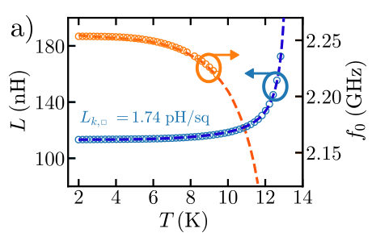
<figcaption class="paper-figure-caption"><b>Fig 4.</b> Figure 3(a) shows the temperature dependence of D2 inductance, L, and resonance frequency, f0, as extracted from our two separate measurement approaches.These measurements were performed on different physical de-</figcaption>
</figure>
<figure class="paper-figure-card">

<figcaption class="paper-figure-caption"><b>Fig 5.</b> Figure 4. Temperature- and field-dependent quality factor degradation. (a) Qi as a function of applied parallel magnetic field for devices D5 and D6 at T = 2 K. The field values BQ = 391 mT for D5 and BQ = 300 mT for D6 for which a gradual degradation of more than 10% manifests are highlighted by dashed vertical lines. (b) Temperature dependence of Qi for device D1 in the absence of an applied field (squares). The dashed curve represents a fit to the quasiparticle-loss model of Eq. 5.</figcaption>
</figure>
</div>

<p><strong>Summary.</strong> This paper characterizes superconducting spiral inductors designed for RF readout in quantum computing. By combining two independent microwave measurement techniques, the authors successfully disentangle temperature and magnetic field effects on the inductor's inductance versus its capacitance. The results establish critical design metrics needed to build stable, miniaturized components capable of operating reliably at elevated temperatures and high magnetic fields.</p>
<p><strong>Why it may be interesting.</strong> This work directly addresses hardware limitations for scaling up solid-state quantum processors by providing a robust characterization framework for critical superconducting components under realistic operating conditions (high T, high B).</p>
<details>
<summary>Detailed structure</summary>
<p><strong>Main problem.</strong> The study addresses the need for reliable superconducting circuit elements, specifically spiral inductors, to function as readouts in future quantum computers operating at elevated temperatures and high magnetic fields.</p>
<p><strong>Main result.</strong> The research successfully separated inductive and capacitive contributions using complementary measurement techniques, showing that temperature and field-induced shifts are dominated by changes in the inductor's kinetic inductance rather than capacitance.</p>
<p><strong>Method.</strong> Measurements were performed using microwave reflectometry on NbTiN spiral inductors across varying temperatures (up to several Kelvin) and magnetic fields (approaching 1 T), employing both weakly coupled resonator and independent two-port extraction setups.</p>
<p><strong>Model / system.</strong> The physical system is a superconducting spiral inductor, modeled as having geometric ($L_g$) and temperature/field-dependent kinetic inductance ($L_k$). The analysis uses complex fitting procedures to separate these components from parasitic capacitance effects.</p>
<p><strong>Key observables.</strong> Resonant frequency ($f_0$), internal quality factor ($Q_i$), extracted inductances ($L_g, L_k$), and the field/temperature dependence of these parameters.</p>
<p><strong>Important parameters / regimes.</strong> Operating temperature (T &gt; 1 K), magnetic field strength (B approaching 1 T), kinetic inductance fraction ($\alpha = L_k/(L_g + L_k)$), and vortex penetration scale ($B_Q$).</p>
<p><strong>Assumptions / limitations.</strong> The primary assumption is that the observed frequency/quality factor shifts can be quantitatively separated into purely inductive changes, allowing for the isolation of $L(T)$ and $L(B)$.</p>
<p><strong>Figures summary.</strong> Figures illustrate the measurement setups (Set-up 1 vs. Set-up 2), compare derived inductance values from both methods to confirm consistency, and plot the degradation of $Q_i$ versus temperature or applied magnetic field.</p>
<p><strong>Paper structure.</strong> The paper systematically introduces the problem in quantum readout circuits, details two complementary microwave measurement setups (resonator coupling and two-port extraction), presents data showing the quantitative separation of inductive/capacitive effects, and concludes with design guidelines linking geometry to operational robustness.</p>
</details>
<details>
<summary>Abstract</summary>
<p>Superconducting spiral inductors are emerging as key components for radio-frequency (RF) reflectometry, a widely used readout technique for semiconductor spin qubits. Future scalable quantum-computing architectures are expected to operate at elevated temperatures and magnetic fields, placing new demands on the performance and stability of superconducting circuit elements. Here, we present a systematic study of NbTiN spiral inductors under temperatures of several kelvin and magnetic fields approaching 1 T. By combining weakly coupled resonator measurements with independent two-port inductance extraction, we separate inductive and capacitive contributions to device behaviour and directly identify the origin of resonance shifts and quality factor degradation. Furthermore, we establish practical design metrics linking geometry, temperature sensitivity, and magnetic-field robustness. These results provide a general framework for benchmarking superconducting inductors and guiding the design of future RF-reflectometry circuits for practical quantum technologies.</p>
</details>
<p><sub><a href="#top">↑ back to top</a></sub></p>

<p><a id="paper-2607.00513"></a></p>
<h3 id="surface-charges-in-a-rydberg-atom-nanowaveguide-hybrid-quantum-system"><a href="http://arxiv.org/abs/2607.00513v1">Surface charges in a Rydberg atom-nanowaveguide hybrid quantum system</a></h3>
<p><strong>Authors:</strong> Aswathy Raj, Anna Kortel, Krishna Jadeja, Dylan J. Brown, Alexey Vylegzhanin, Robert Löw, Síle Nic Chormaic<br>
<strong>Type:</strong> experiment · <strong>Category:</strong> other · <strong>PDF:</strong> <a href="https://arxiv.org/pdf/2607.00513v1">https://arxiv.org/pdf/2607.00513v1</a><br>
<strong>Analysis basis:</strong> full PDF text, analyzed in chunks
<strong>Topic relevance:</strong> <code>Rydberg arrays</code> <strong>3/5</strong> · <code>methods for driven-dissipative</code> <strong>3/5</strong> · <code>quantum measurements</code> <strong>3/5</strong> · <code>analog quantum simulation</code> <strong>2/5</strong> · <code>correlated / nonlocal dissipation</code> <strong>2/5</strong> · <code>driven-dissipative phase transition</code> <strong>2/5</strong> · <code>non-equilibrium dynamics</code> <strong>2/5</strong> · <code>quantum optics experiment</code> <strong>2/5</strong> · <code>Keldysh / 2PI / non-Gaussian methods</code> <strong>1/5</strong> · <code>QC/QI experiment</code> <strong>1/5</strong> · <code>Tavis-Cummings &amp; cavity-many-emitter</code> <strong>1/5</strong> · <code>correlated cavity matter</code> <strong>1/5</strong> · <code>non-equilibrium universality</code> <strong>1/5</strong></p>
<div class="figure-strip-hint">↔ Scroll figures horizontally</div>
<div class="paper-figures-scroll">
<figure class="paper-figure-card">
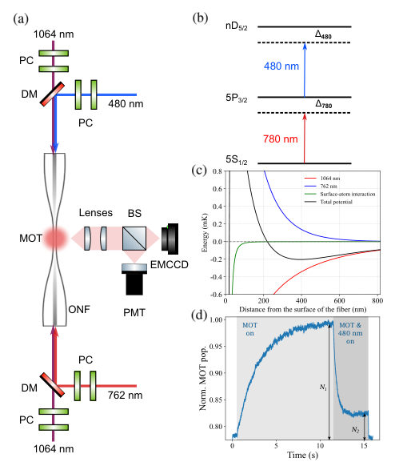
<figcaption class="paper-figure-caption"><b>Fig 1.</b> FIG. 1. (a) Schematic of the experimental setup. The polariza- tion control (PC) consists of two quarter-wave plates. The beams are combined using dichroic mirrors (DM). The cloud of atoms is aligned with the waist of the ONF and its fluorescence is monitored by a PMT and an EMCCD. (b) Diagram of the Rydberg excitation scheme, with detunings ∆780 and ∆480. (c) Numerical simulation of the ONF-based dipole trap potential, showing attractive (red) and repulsive (blue) potentials, and the total potential (black) includ- ing atom-surface interactions (van der Waals and Casimir-Polder) (green). The trap position is 406 nm away from the fiber surface and the trap depth is 0.17 mK. (d) Sample MOT...</figcaption>
</figure>
<figure class="paper-figure-card">

<figcaption class="paper-figure-caption"><b>Fig 2.</b> FIG. 2. Rydberg excitation spectra for 35D5/2 for three trapping beam configurations in the ONF: (i) a unidirectional 762 nm beam (blue curve), (ii) counterpropagating beams of 1064 nm (red curve), and (iii) the combination of both wavelengths (green curve). For each configuration, the corresponding beams were left on during the measurement. (a) Initial spectrum for each beam configuration. (b) Spectra after the system was exposed to continuous 480 nm light, tuned to ∆480 = +20 MHz for 30 minutes with the MOT on. In both (a) and (b) each data point corresponds to 4 seconds of 480 nm exposure, averaged over 4 measurements .</figcaption>
</figure>
<figure class="paper-figure-card">

<figcaption class="paper-figure-caption"><b>Fig 3.</b> FIG. 3. Time evolution of the Rydberg excitation spectrum for 35D5/2 for config. (iii) with 480 nm light continuously on. The legend gives the cumulative 480 nm exposure time, beginning from when the 480 nm light was initially switched on. Each data point corresponds to 5 seconds of 480 nm exposure and averaged over the 5 second PMT signal.</figcaption>
</figure>
<figure class="paper-figure-card">
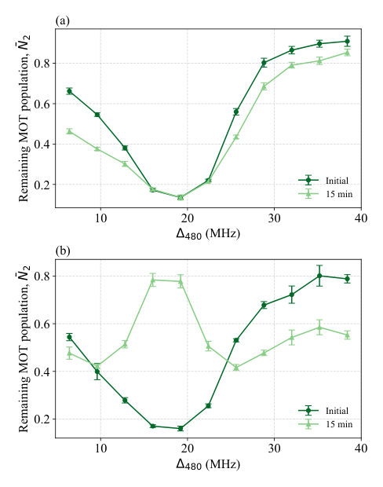
<figcaption class="paper-figure-caption"><b>Fig 4.</b> FIG. 4. Rydberg excitation spectrum for 40D5/2 for config. (iii). Ini- tial spectrum (dark green) and spectrum after 15 minutes of 480 nm exposure (light green) (a) with and (b) without the applied AC field. Each data point corresponds to 4 seconds of 480 nm exposure, aver- aged over 4 measurements</figcaption>
</figure>
<figure class="paper-figure-card">

<figcaption class="paper-figure-caption"><b>Fig 5.</b> FIG. 6. Electric field as a function of the distance from the ONF sur- face, with an estimate of 5 × 105 dipoles (dashed) plus 65 electrons (solid) stuck on the fiber. Inset: Schematic illustrating the radial DC electric field originating from dipoles (transparent circles) of Rb atoms adsorbed on the fiber surface. Red circles depict the random distribution of electrons on the ONF surface.</figcaption>
</figure>
</div>

<p><strong>Summary.</strong> The paper experimentally investigates how surface charge accumulation on optical nanofibers degrades Rydberg excitation in trapped atoms. By observing time-dependent spectral shifts and suppressing them with an external AC field, the authors confirm that surface charges are the culprit. This work establishes crucial guidelines for mitigating these environmental electric fields in future integrated quantum technologies.</p>
<p><strong>Why it may be interesting.</strong> This work is highly relevant for AMO physicists working on open quantum systems because it provides a concrete, experimentally validated mechanism (surface charging) that limits the scalability of integrated Rydberg quantum devices, offering practical engineering solutions.</p>
<details>
<summary>Detailed structure</summary>
<p><strong>Main problem.</strong> The study investigates how uncontrolled surface electric fields, arising from charge accumulation on dielectric nanostructures, degrade Rydberg excitation processes in hybrid quantum systems.</p>
<p><strong>Main result.</strong> Spectral deformations observed during Rydberg excitation are strongly attributed to DC energy level shifts caused by accumulated surface charges. Applying an external oscillating electric field successfully suppresses these spectral features.</p>
<p><strong>Method.</strong> The research combines experimental measurements of time-evolving Rydberg spectra with theoretical modeling using the Lindblad master equation to simulate charge effects.</p>
<p><strong>Model / system.</strong> The system involves laser-cooled $^{87}	ext{Rb}$ atoms excited into high-$n$ Rydberg states near an optical nanofiber (ONF). The model incorporates DC energy level shifts ($\delta_{DC}$) derived from surface charges and uses the Lindblad master equation to track population dynamics.</p>
<p><strong>Key observables.</strong> Time evolution of the Rydberg excitation spectrum, spectral splitting/deformation magnitude, and remaining MOT population ($N'$).</p>
<p><strong>Important parameters / regimes.</strong> Rydberg state ($n	ext{D}_{5/2}$), trapping beam wavelengths (762 nm, 1064 nm), external AC field frequency (100 kHz), and surface charge density.</p>
<p><strong>Assumptions / limitations.</strong> The dominant mechanism for charge generation is identified as Rydberg-ground state collisional ionization enhanced by dipole trapping fields. The model assumes the ONF is single-mode at relevant wavelengths.</p>
<p><strong>Figures summary.</strong> Figures illustrate schematic setups, excitation schemes, time evolution of spectra showing deformation, and comparisons between spectra with and without external AC field suppression.</p>
<p><strong>Paper structure.</strong> The paper progresses by first establishing the experimental setup and observing spectral anomalies under trapping fields. It then uses external fields to diagnose charge effects, models these shifts theoretically, and finally identifies collisional ionization as the source of the charges, providing mitigation guidelines.</p>
</details>
<details>
<summary>Abstract</summary>
<p>Hybrid quantum platforms based on highly excited Rydberg atoms coupled to nanophotonics devices offer a promising route toward scalable quantum networks and integrated quantum technologies. However, the close proximity of Rydberg atoms to dielectric nanostructures makes these systems particularly susceptible to uncontrolled surface electric fields that can lead to a degradation of the excitation process. Here, we experimentally investigate Rydberg excitation of laser-cooled $^{87}$Rb atoms via the evanescent field of an optical nanofiber in the presence of fiber-guided red- and blue-detuned light fields as used to trap ground state atoms in fiber-based dipole traps. We observe a time evolution of the Rydberg excitation spectrum when both the dipole trapping fields are on and the additional spectral features that appear can be suppressed by applying an external oscillating electric field to the system, strongly indicating that surface charge accumulation is responsible for the observed spectral feature. The experimental results are reproduced qualitatively by a model that incorporates DC energy level shifts arising from electric fields generated by charges deposited on the nanofiber surface. We identify Rydberg-ground state collisional ionization, which is enhanced by the dipole trapping fields, as the dominant mechanism for charge generation. These results provide new insight into charge dynamics at dielectric nanophotonic interfaces and establish practical guidelines for mitigating surface charge-induced electric fields in fiber-integrated Rydberg quantum systems.</p>
</details>
<p><sub><a href="#top">↑ back to top</a></sub></p>

<p><a id="paper-2607.01035"></a></p>
<h3 id="susceptibility-kinetic-uncertainty-relations-for-quantum-systems"><a href="http://arxiv.org/abs/2607.01035v1">Susceptibility-kinetic uncertainty relations for quantum systems</a></h3>
<p><strong>Authors:</strong> Didrik Palmqvist, Ludovico Tesser, Janine Splettstoesser<br>
<strong>Type:</strong> theory · <strong>Category:</strong> statistical mechanics · <strong>PDF:</strong> <a href="https://arxiv.org/pdf/2607.01035v1">https://arxiv.org/pdf/2607.01035v1</a><br>
<strong>Analysis basis:</strong> full PDF text, analyzed in chunks
<strong>Topic relevance:</strong> <code>driven-dissipative phase transition</code> <strong>3/5</strong> · <code>methods for driven-dissipative</code> <strong>3/5</strong> · <code>non-equilibrium dynamics</code> <strong>3/5</strong> · <code>Keldysh / 2PI / non-Gaussian methods</code> <strong>2/5</strong> · <code>correlated / nonlocal dissipation</code> <strong>2/5</strong> · <code>non-equilibrium universality</code> <strong>2/5</strong> · <code>quantum measurements</code> <strong>2/5</strong> · <code>Kondo &amp; dissipative impurity</code> <strong>1/5</strong> · <code>analog quantum simulation</code> <strong>1/5</strong> · <code>entanglement &amp; information structure</code> <strong>1/5</strong> · <code>measurement-induced transitions</code> <strong>1/5</strong></p>
<div class="figure-strip-hint">↔ Scroll figures horizontally</div>
<div class="paper-figures-scroll">
<figure class="paper-figure-card">

<figcaption class="paper-figure-caption"><b>Fig 1.</b> Figure 1. Quantum system S coupled to reservoirs (baths) via coupling ˆVα,β,..., enabling transport. The coupling strength to (one) reservoir is parameterized by θ, resulting in its en- coding in the state dynamics ˆρ(θ) that serves as a basis for generalizing the concept of dynamical activity to quantum systems. The color-shading of the baths symbolizes arbitrary out-of-equilibrium situations.</figcaption>
</figure>
<figure class="paper-figure-card">

<figcaption class="paper-figure-caption"><b>Fig 2.</b> Figure 2. Classical local KUR [Eq. (35)] and S-KUR [Eq. (34)] for particle current in DQD as a function of chemical potential bias ∆µ. We set ΓR = 5ΓL = g/5, TL = TR = g/50kB and ϵd = 0. (a) Violation of local classical KUR and saturation of the S-KUR. (b) Particle current J(N) L , susceptibility ˙M (N) L and their average J (N) L . The close-to-equilibrium approximation ˙M (N) L ≈ ΓLΓR</figcaption>
</figure>
<figure class="paper-figure-card">

<figcaption class="paper-figure-caption"><b>Fig 3.</b> Figure 3. (a,b) Violation of classical local KUR [Eq. (35)] and (c,d) saturation of S-KUR [Eq. (34)] in DQD for varying tunneling strength g and chemical potential bias ∆µ. We set ΓL = ΓR = Γ, TL = TR = 0.1Γ/kB, and ϵd = 0.</figcaption>
</figure>
<figure class="paper-figure-card">
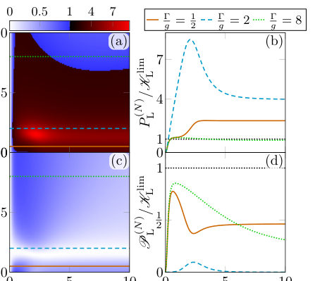
<figcaption class="paper-figure-caption"><b>Fig 4.</b> Figure 4. (a,b) Violation of classical local KUR [Eq. (35)] and (c,d) saturation of S-KUR [Eq. (34)] in DQD for varying coupling strength Γ = ΓL = ΓR and chemical potential bias ∆µ. We set TL = TR = 0.1g/kB, and ϵd = 0.</figcaption>
</figure>
<figure class="paper-figure-card">

<figcaption class="paper-figure-caption"><b>Fig 5.</b> Figure 5. (a) Violation of classical local KUR [Eq. (35)] and (b) saturation of S-KUR [Eq. (34)] in DQD for varying temperatures TL, TR. We set ΓL = ΓR = Γ, g = 5Γ, ϵd = 2Γ, ∆µ = 10Γ.</figcaption>
</figure>
</div>

<p><strong>Summary.</strong> The paper introduces the Susceptibility-Kinetic Uncertainty Relation (S-KUR) to set universal bounds on current measurement precision in open quantum systems. By incorporating a 'susceptibility' term derived from the system-reservoir coupling, it overcomes limitations of previous relations that failed under strong coherence or non-Markovian dynamics. This makes it a powerful tool for optimizing measurements in realistic quantum devices like quantum dots.</p>
<p><strong>Why it may be interesting.</strong> This work provides a powerful, generalized tool for quantifying fundamental limits on measurement precision in complex, non-equilibrium quantum devices, which is crucial for designing high-precision quantum sensors and computing elements.</p>
<details>
<summary>Detailed structure</summary>
<p><strong>Main problem.</strong> The primary goal is establishing a universal uncertainty relation that constrains measurement precision for current fluctuations out of equilibrium in open quantum systems.</p>
<p><strong>Main result.</strong> The derived Susceptibility-Kinetic Uncertainty Relation (S-KUR) provides a general, tight bound on current precision that remains valid even when standard kinetic relations fail due to strong quantum coherence or coupling effects.</p>
<p><strong>Method.</strong> The relation is derived by applying the quantum Cramér-Rao bound to observables whose dynamics are parameterized by the system-reservoir coupling strength ($   heta$).</p>
<p><strong>Model / system.</strong> The analysis focuses on open quantum systems coupled to reservoirs (baths), often modeled using techniques applicable to steady-state transport, such as in a Double Quantum Dot (DQD) setup.</p>
<p><strong>Key observables.</strong> Current ($J$), Noise ($S(X)$), Susceptibility ($\dot{M}(X)$), and Partial Dynamical Activity ($A_V(t)$).</p>
<p><strong>Important parameters / regimes.</strong> System-reservoir coupling strength ($   heta$), temperature ($T$), bias voltage ($\Delta\mu$), and the quantum Fisher information ($\mathcal{F}_{    heta    heta}$).</p>
<p><strong>Assumptions / limitations.</strong> The derivation relies on generalizing bounds from weak-coupling Markovian limits to encompass strong coupling, coherence, and time-dependent driving protocols.</p>
<p><strong>Figures summary.</strong> Figures illustrate the violation of classical local uncertainty relations (like the classical KUR) in quantum transport scenarios (e.g., DQD), while demonstrating that the S-KUR remains valid and provides a tight bound across varying biases and temperatures.</p>
<p><strong>Paper structure.</strong> The paper builds from general principles using the quantum Cramér-Rao bound to define the Partial Dynamical Activity, leading to the universal S-KUR. It then applies this relation to specific physical models like steady-state transport in DQD systems to demonstrate its superiority over classical bounds.</p>
</details>
<details>
<summary>Abstract</summary>
<p>Kinetic uncertainty relations bound current precision of stochastic processes by dynamical activity. The extension of these bounds to quantum systems has been impeded by coherence, strong system-reservoir coupling, and the subtlety of defining dynamical activity in the quantum regime. Here, we introduce a partial dynamical activity through the quantum Fisher information associated with the rescaling of the system-reservoir coupling and show that it bounds current precision via a universal susceptibility-kinetic uncertainty relation. The general validity of this relation for any open quantum system is guaranteed by the natural contribution of a susceptibility term, which is experimentally accessible by tuning the system-reservoir coupling strength. We show how the partial dynamical activity encompasses previous definitions of activity in the weak-coupling Markovian limit and that it provides an information-geometric interpretation of correlator-based activities. We illustrate the tight constraint on precision that our bound provides with the example of steady-state transport through a double quantum dot, where quantum effects invalidate previously developed kinetic uncertainty relations. We expect our bound to provide a powerful tool for optimizing precision in arbitrary quantum systems.</p>
</details>
<p><sub><a href="#top">↑ back to top</a></sub></p>

<p><a id="paper-2607.00624"></a></p>
<h3 id="heliciton-assisted-chirality-induced-spin-selectivity-from-helical-dirac-current"><a href="http://arxiv.org/abs/2607.00624v1">Heliciton-Assisted Chirality-Induced Spin Selectivity from Helical Dirac Current</a></h3>
<p><strong>Authors:</strong> Ju Gao, Fang Shen<br>
<strong>Type:</strong> theory · <strong>Category:</strong> other · <strong>PDF:</strong> <a href="https://arxiv.org/pdf/2607.00624v1">https://arxiv.org/pdf/2607.00624v1</a><br>
<strong>Analysis basis:</strong> full PDF text, analyzed in chunks
<strong>Topic relevance:</strong> <code>Keldysh / 2PI / non-Gaussian methods</code> <strong>3/5</strong> · <code>methods for driven-dissipative</code> <strong>3/5</strong> · <code>spintronics-quantum-optics interface</code> <strong>3/5</strong> · <code>Kondo &amp; dissipative impurity</code> <strong>2/5</strong> · <code>exotic spin models in light-matter</code> <strong>2/5</strong> · <code>non-equilibrium dynamics</code> <strong>2/5</strong> · <code>analog quantum simulation</code> <strong>1/5</strong> · <code>correlated / nonlocal dissipation</code> <strong>1/5</strong> · <code>correlated cavity matter</code> <strong>1/5</strong> · <code>driven-dissipative phase transition</code> <strong>1/5</strong> · <code>non-equilibrium universality</code> <strong>1/5</strong></p>
<div class="figure-strip-hint">↔ Scroll figures horizontally</div>
<div class="paper-figures-scroll">
<figure class="paper-figure-card">

<figcaption class="paper-figure-caption"><b>Fig 1.</b> Low-resolution page preview, page 2</figcaption>
</figure>
<figure class="paper-figure-card">
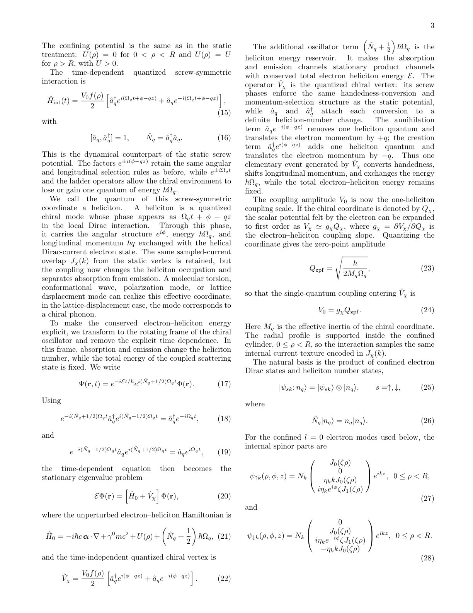
<figcaption class="paper-figure-caption"><b>Fig 2.</b> Low-resolution page preview, page 3</figcaption>
</figure>
<figure class="paper-figure-card">
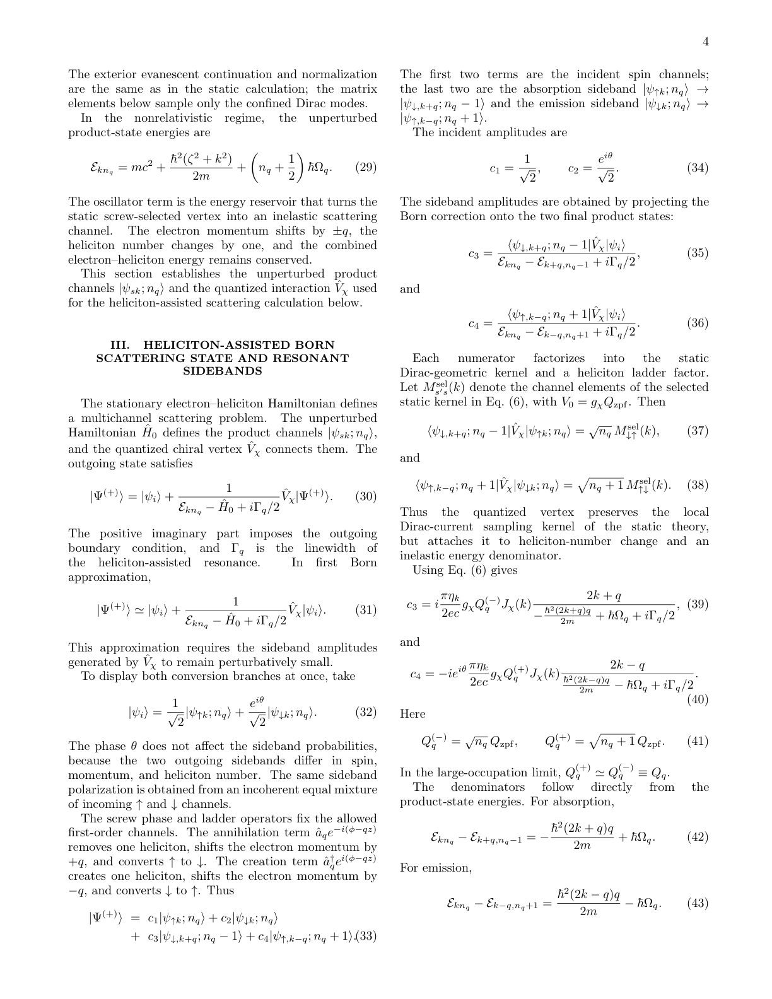
<figcaption class="paper-figure-caption"><b>Fig 3.</b> Low-resolution page preview, page 4</figcaption>
</figure>
<figure class="paper-figure-card">

<figcaption class="paper-figure-caption"><b>Fig 4.</b> Low-resolution page preview, page 5</figcaption>
</figure>
<figure class="paper-figure-card">

<figcaption class="paper-figure-caption"><b>Fig 5.</b> Low-resolution page preview, page 6</figcaption>
</figure>
</div>

<p><strong>Summary.</strong> The paper proposes that Chirality-Induced Spin Selectivity (CISS) can be understood as a resonant inelastic scattering process mediated by a quantized environmental excitation called a 'heliciton.' By coupling the electron to this heliciton, the static chiral potential gains access to energy and momentum exchange channels. This mechanism predicts full spin polarization in sidebands when specific resonance conditions are met, providing a robust theoretical framework for spintronics.</p>
<p><strong>Why it may be interesting.</strong> This work models a quantum transport phenomenon (CISS) using concepts from open quantum systems—specifically, coupling to an environmental bosonic mode (the heliciton)—which is highly relevant for understanding energy-dependent spin filtering in condensed matter.</p>
<details>
<summary>Detailed structure</summary>
<p><strong>Main problem.</strong> To develop a mechanism for Chirality-Induced Spin Selectivity (CISS) that incorporates energy exchange with the environment, moving beyond static chiral potentials.</p>
<p><strong>Main result.</strong> The heliciton supplies both the necessary screw momentum and energy to convert the static handedness-conversion into a resonant, spin-selective inelastic scattering channel.</p>
<p><strong>Method.</strong> First Born scattering theory is used on an electron coupled to a quantized environmental mode (heliciton), analyzing resulting sidebands.</p>
<p><strong>Model / system.</strong> A confined Dirac electron interacting with a chiral potential ($\hat{V}_\chi$) whose quantization yields a 'heliciton' quantum. The system dynamics are governed by time-dependent and stationary eigenvalue equations involving the heliciton reservoir energy.</p>
<p><strong>Key observables.</strong> Sideband polarization ($P_{sb}$), which reaches full spin polarization at specific resonance detunings ($\Delta_\pm = 0$).</p>
<p><strong>Important parameters / regimes.</strong> Helhelicon frequency ($\Omega_q$), momentum transfer ($q$), and the linewidth ($\Gamma_q$) of the resonant sidebands.</p>
<p><strong>Assumptions / limitations.</strong> The mechanism relies on three ingredients: helical Dirac-current texture, quantized screw-symmetric environmental motion (heliciton), and resonant exchange of energy/momentum. No ad hoc spin-dependent potential is introduced.</p>
<p><strong>Paper structure.</strong> The paper progresses from identifying the limitation of static potentials to introducing the heliciton quantization, applying first Born scattering theory to derive sideband polarization formulas, and finally confirming that the resonance mechanism provides the necessary spin selectivity signature upon reversing chirality ($q 	o -q$).</p>
</details>
<details>
<summary>Abstract</summary>
<p>We develop a quantized chiral-field mechanism for chirality-induced spin selectivity (CISS). The corresponding quantum is a heliciton: a helical mode with phase coordinate $φ-qz$, screw momentum $\hbar q$, and energy $\hbarΩ_q$. A helical electron can absorb or emit this quantum, converting the static chiral vertex developed in our preceding work into an inelastic resonant scattering process. Using first Born scattering theory, we show that an incident two-spin-channel state generates two heliciton-assisted sidebands. Absorption converts the $\uparrow k$ channel into the $\downarrow,k+q$ sideband, while emission converts the $\downarrow k$ channel into the $\uparrow,k-q$ sideband. Thus the heliciton supplies both the screw momentum and energy needed to turn the handedness-conversion into a resonant spin-selective channel.   The two sidebands inherit the same sampled-current overlap $J_χ(k)$ from the static theory, but acquire different kinematic weights and different resonance detunings. The sideband sector reaches full spin polarization at the respective isolated heliciton resonances, with $P_{\rm sb}(k,q)\simeq +1$ for $Δ_-(k,q)=0$ and $P_{\rm sb}(k,q)\simeq -1$ for $Δ_+(k,q)=0$. Reversing the screw handedness, $q\rightarrow -q$, interchanges the two sideband channels and reverses the polarization. No ad hoc spin-dependent potential is introduced. The spin selectivity comes from three ingredients: helical Dirac-current texture, quantized screw-symmetric environmental motion, and resonant exchange of screw momentum and energy. This identifies CISS as a heliciton-assisted resonance mechanism that produces spin polarization in the inelastic sideband sector.</p>
</details>
<p><sub><a href="#top">↑ back to top</a></sub></p>

<p><a id="paper-2607.00779"></a></p>
<h3 id="asymmetric-light-scattering-from-an-atomic-system-with-gain-a-quantum-analysis"><a href="http://arxiv.org/abs/2607.00779v1">Asymmetric Light Scattering from an Atomic System with Gain: A Quantum Analysis</a></h3>
<p><strong>Authors:</strong> Lorena Acevedo, Manuel Donaire<br>
<strong>Type:</strong> theory · <strong>Category:</strong> other · <strong>PDF:</strong> <a href="https://arxiv.org/pdf/2607.00779v1">https://arxiv.org/pdf/2607.00779v1</a><br>
<strong>Analysis basis:</strong> full PDF text, analyzed in chunks
<strong>Topic relevance:</strong> <code>Keldysh / 2PI / non-Gaussian methods</code> <strong>3/5</strong> · <code>driven-dissipative phase transition</code> <strong>3/5</strong> · <code>methods for driven-dissipative</code> <strong>3/5</strong> · <code>correlated / nonlocal dissipation</code> <strong>2/5</strong> · <code>non-equilibrium dynamics</code> <strong>2/5</strong> · <code>non-equilibrium universality</code> <strong>2/5</strong> · <code>Tavis-Cummings &amp; cavity-many-emitter</code> <strong>1/5</strong> · <code>interference shaping light</code> <strong>1/5</strong></p>
<div class="figure-strip-hint">↔ Scroll figures horizontally</div>
<div class="paper-figures-scroll">
<figure class="paper-figure-card">
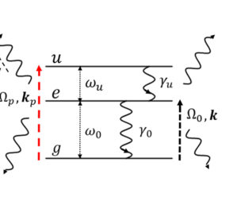
<figcaption class="paper-figure-caption"><b>Fig 1.</b> Figure 1. Schematics of the system under study, consisting of two identical three- level atoms and two external fields. A pump field of strength Ωp causes the transient excitation of atom A from its ground state g to its upper level u, from which it decays, rapidly and incoherently, to the intermediate level e at a rate γu, causing an effective pump rate P = Ω2 p/γu. Energy intervals and dissipative channels are depicted. Atom B is in its ground state. The two atoms are illuminated by a weak probe field of strength Ω0, polarization transverse to the interatomic axis and momentum k, quasi- resonant with the g ⇄e transition. Incidence is either transverse or alongside the interatomic axis....</figcaption>
</figure>
<figure class="paper-figure-card">

<figcaption class="paper-figure-caption"><b>Fig 2.</b> Figure 2. Diagrammatic representation of scattering processes at leading order. Time runs along the vertical axis from 0 up to the observation time t, both from the top and from the bottom. From the top, the evolution is given by U†(t); from the bottom, it is given by U(t). Solid straight lines represent atomic states, g and e. ’Tilded’ states, ˜g and ˜e, at the initial time stand for the pure states of the mixed state of atom A. Wavy lines stand for virtual photons created and annihilated at the interaction vertices attached to either atom. Dashed arrows represent photons of the external field which are annihilated at interaction vertices attached to either atom. Each vertex represents an...</figcaption>
</figure>
<figure class="paper-figure-card">

<figcaption class="paper-figure-caption"><b>Fig 3.</b> Figure 3. Angular distribution of the scattered power for frontal incidence W⊥(θ) and different pump rates, P = (0.5, 2, 20)γ0. The interatomic distance is taken at kR = 2, the non-radiative linewidth is γnr = 0.2γ0, and the detuning is fixed at values ω −ω0 = −0.4γ0 (left panel) and ω −ω0 = 0.4γ0 (right panel).</figcaption>
</figure>
<figure class="paper-figure-card">

<figcaption class="paper-figure-caption"><b>Fig 4.</b> Figure 4. Graphical representation of the log of the ratio of the scattered power towards the active atom and towards the passive one for frontal incidence, log10 [W⊥(0)/W⊥(π)], for fixed interatomic distance kR = 2, and non-radiative linewidth γnr = 0.2γ0. Left panel: In terms of the detuning ω −ω0, with several pump rates, P = (0.5, 2, 4, 8)γ0. Right panel: In terms of the pump rate P, with detuning ω −ω0 = 0.4γ0 (black line) and ω −ω0 = −0.4γ0 (red line).</figcaption>
</figure>
<figure class="paper-figure-card">
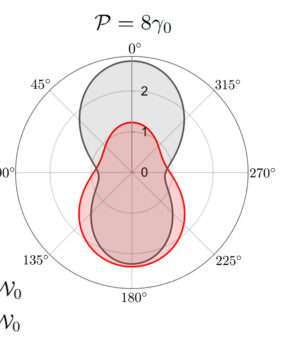
<figcaption class="paper-figure-caption"><b>Fig 5.</b> Figure 5. Angular distribution of the scattered power for side lighting, G in red, L in grey, and two different pump rates, P = 2γ0 (left panel), P = 8γ0 (right panel). The interatomic distance is taken at kR = 2, the non-radiative linewidth is γnr = 0.2γ0, and the detuning is fixed at the negative value ω −ω0 = −0.4γ0.</figcaption>
</figure>
</div>

<p><strong>Summary.</strong> The paper provides a rigorous quantum analysis of asymmetric light scattering from two interacting atoms with built-in gain. It demonstrates that the system exhibits non-reciprocal behavior, meaning the scattered power depends on whether the incident light approaches from the 'gain' or 'loss' side. This quantum finding directly contradicts predictions made by classical linear response theories.</p>
<p><strong>Why it may be interesting.</strong> This work is highly relevant to AMO physics and quantum optics as it explores non-linear, non-reciprocal light scattering phenomena in open quantum systems driven by gain/loss mechanisms. The conflict between quantum and classical predictions highlights fundamental limitations of semiclassical approximations.</p>
<details>
<summary>Detailed structure</summary>
<p><strong>Main problem.</strong> The study investigates the directionality (asymmetry) of light scattering from a binary atomic system that incorporates gain, comparing quantum predictions against classical linear response theories.</p>
<p><strong>Main result.</strong> The fully quantum analysis reveals a lack of reciprocity in the optical response for side lighting, showing an asymmetry dependent on the incidence side and detuning, which contradicts classical expectations.</p>
<p><strong>Method.</strong> The authors employ a time-dependent perturbation theory within the wavefunction formalism, calculating scattering power using diagrammatic expansions (e.g., Dyson series) to account for quantum interference effects.</p>
<p><strong>Model / system.</strong> The system is a binary dimer of identical atoms, where one atom is incoherently pumped (creating gain/loss mechanisms) and interacts with incident and scattered photons via the dipole coupling Hamiltonian.</p>
<p><strong>Key observables.</strong> Differential scattering power ($W_{sc}(	heta)$), forward vs. backward scattered power ratios ($rac{W_{fw}^G}{W_{fw}^L}$), and angular distribution asymmetry.</p>
<p><strong>Important parameters / regimes.</strong> Pump rate, detuning of the probe field ($\omega - \omega_0$), interatomic distance ($R$), and the ratio of gain/loss coupling strengths.</p>
<p><strong>Assumptions / limitations.</strong> Approximations include assuming the dipole moment lies perpendicular to the interatomic axis, using steady-state limits ($\gamma t \gg 1$), and distinguishing between single-atom and collective (both-atoms) scattering processes.</p>
<p><strong>Figures summary.</strong> Figures illustrate angular distributions of scattered power for frontal vs. side illumination, showing ratios of forward/backward powers as functions of detuning and pump rate, comparing quantum results to classical predictions.</p>
<p><strong>Paper structure.</strong> The paper systematically derives expressions for differential scattering power ($W$) in different geometries (frontal $\perp$, side $G$, side $L$), contrasting the quantum calculation (using diagrams) with the classical linear response theory prediction at each stage.</p>
</details>
<details>
<summary>Abstract</summary>
<p>We study the the scattering of light by a binary system of identical atoms in which one of them is incoherently pumped. This system belongs to the kind of non-parity symmetric optical systems in which gains and losses are partially compensated. We carry out a fully quantum analysis of the directionality of the radiation scattered from the atoms when the incident light strikes the system either perpendicular or alongside the interatomic axis. We find that, generally, while the degree of asymmetry depends on the pump rate, the preferred direction for emission depends on the interatomic distance and the detuning of the probe field with respect to the resonant frequency. On physical grounds, for the case of frontal illumination, the asymmetry is the result of the interference of the photons emitted from different atoms. On the contrary, for side lighting, the asymmetry with respect to the side of incidence is caused by both the phase difference between the probe field photons that strike each atom and the interference between the photons emitted from different atoms. Further, for side lighting too, our quantum approach demonstrates that the forward scattered power depends on the side of incidence, which reveals the lack of reciprocity in the quantum optical response of the system. This result conflicts with what is obtained within a classical approach.</p>
</details>
<p><sub><a href="#top">↑ back to top</a></sub></p>

<p><a id="paper-2607.01192"></a></p>
<h3 id="confinement-in-a-magnetically-induced-wsemath436math-quantum-dots"><a href="http://arxiv.org/abs/2607.01192v1">Confinement in a magnetically induced WSe$_2$ quantum dots</a></h3>
<p><strong>Authors:</strong> Rachid El Aitouni, Mohammed El Azar, Clarence Cortes, David Laroze, Ahmed Jellal<br>
<strong>Type:</strong> theory · <strong>Category:</strong> other · <strong>PDF:</strong> <a href="https://arxiv.org/pdf/2607.01192v1">https://arxiv.org/pdf/2607.01192v1</a><br>
<strong>Analysis basis:</strong> full PDF text, analyzed in chunks
<strong>Topic relevance:</strong> <code>Keldysh / 2PI / non-Gaussian methods</code> <strong>3/5</strong> · <code>spintronics-quantum-optics interface</code> <strong>3/5</strong> · <code>driven-dissipative phase transition</code> <strong>2/5</strong> · <code>methods for driven-dissipative</code> <strong>2/5</strong> · <code>non-equilibrium dynamics</code> <strong>2/5</strong> · <code>Kondo &amp; dissipative impurity</code> <strong>1/5</strong> · <code>analog quantum simulation</code> <strong>1/5</strong> · <code>exotic spin models in light-matter</code> <strong>1/5</strong> · <code>non-equilibrium universality</code> <strong>1/5</strong></p>
<div class="figure-strip-hint">↔ Scroll figures horizontally</div>
<div class="paper-figures-scroll">
<figure class="paper-figure-card">
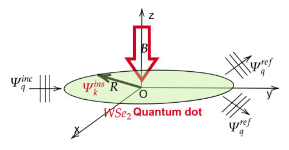
<figcaption class="paper-figure-caption"><b>Fig 1.</b> FIG. 1. Schematic of a monolayer WSe2 sheet lying in the xy- plane, subjected to a perpendicular magnetic field ⃗B = Bˆz confined to a circular region of radius R. The field is uniform inside the dot (r &lt; R) and vanishes outside (r &gt; R) in the symmetric gauge. Incident Dirac waves Ψinc q propagate along the x-direction, penetrate the magnetic boundary, and form standing waves Ψins k inside the dot, while reflected waves Ψref q scatter outward. The inset coordinate system shows the layer orientation with ˆz normal to the WSe2 plane.</figcaption>
</figure>
<figure class="paper-figure-card">
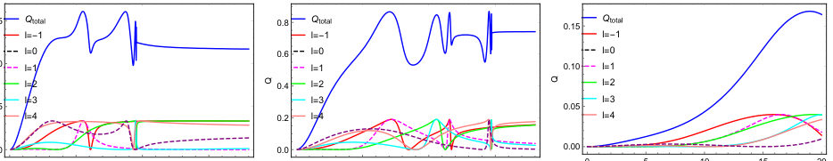
<figcaption class="paper-figure-caption"><b>Fig 2.</b> FIG. 2. (Color online) The scattering efficiency Q as a function of the magnetic field B for different values E (0.8, 1, 2 eV), for R = 50 nm with intrinsic values λc = 75 meV, λv = 112, 5 meV, ∆= 0.85 eV.</figcaption>
</figure>
<figure class="paper-figure-card">
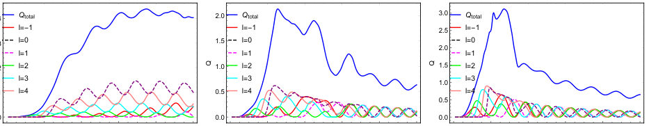
<figcaption class="paper-figure-caption"><b>Fig 3.</b> FIG. 3. (Color online) The scattering efficiency Q as a function of the radius for three values of magnetic field (B = 1, 5, 10 T), with E = 1 eV.</figcaption>
</figure>
<figure class="paper-figure-card">
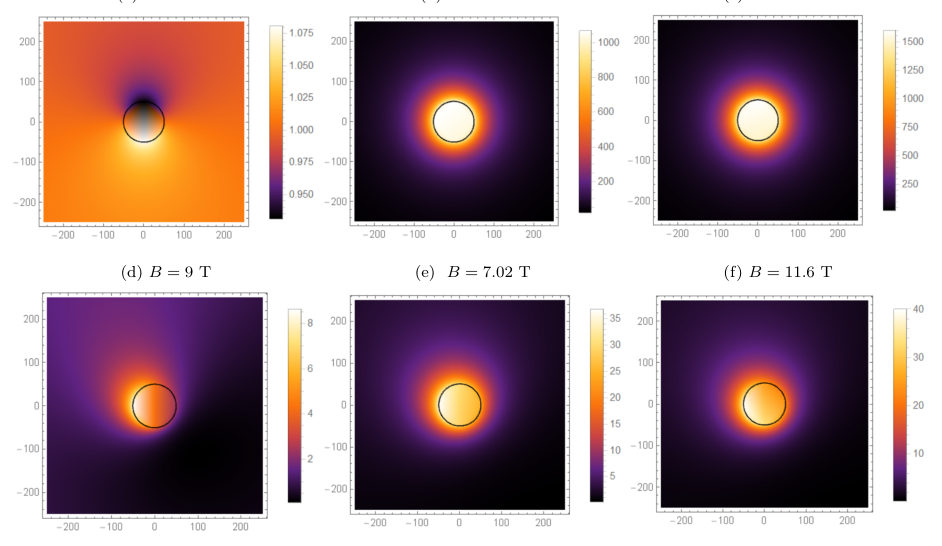
<figcaption class="paper-figure-caption"><b>Fig 4.</b> FIG. 4. Density as a function of x and y for two energies: E = 0.8 eV (top row) and E = 1 eV (bottom row). The top row corresponds to magnetic fields B = 1 T, B = 5.9 T, and B = 9.26 T, while the bottom row corresponds to B = 9, B = 7.02 T, and B = 11.6 T. These configurations illustrate the resonance intensities presented in Fig. 2.</figcaption>
</figure>
</div>

<p><strong>Summary.</strong> This paper theoretically models the confinement of Dirac fermions in WSe2 quantum dots subjected to localized magnetic fields. By solving the effective Dirac Hamiltonian, the authors show that the magnetic field efficiently suppresses Klein tunneling inherent to graphene. The results demonstrate that this setup allows for strong, tunable carrier localization and resonant transport crucial for next-generation spintronic and valleytronic devices.</p>
<p><strong>Why it may be interesting.</strong> This work provides a detailed theoretical framework for controlling electron transport using magnetic fields in 2D semiconductors, which is highly relevant to understanding engineered quantum potentials and open quantum systems dynamics.</p>
<details>
<summary>Detailed structure</summary>
<p><strong>Main problem.</strong> The study theoretically investigates how localized magnetic fields confine massive Dirac fermions within a WSe2 quantum dot structure.</p>
<p><strong>Main result.</strong> The localized magnetic field effectively suppresses Klein tunneling and promotes the formation of stable, tunable quasibound states in WSe2, establishing a basis for spin-valleytronic devices.</p>
<p><strong>Method.</strong> The authors derived exact wave functions and scattering coefficients by solving the effective Dirac Hamiltonian using Kummer's confluent hypergeometric functions and Bessel/Hankel functions.</p>
<p><strong>Model / system.</strong> The system is monolayer tungsten diselenide (WSe2), modeled as a quantum dot subjected to an intrinsic band gap, strong spin-orbit coupling, and a localized perpendicular magnetic field. The Hamiltonian incorporates these features into the effective Dirac equation.</p>
<p><strong>Key observables.</strong> Scattering efficiency ($Q$), carrier density distributions ($
ho(x, y)$), and resonance peak locations.</p>
<p><strong>Important parameters / regimes.</strong> Incident energy (E), magnetic field strength (B), and quantum dot radius (R).</p>
<p><strong>Assumptions / limitations.</strong> The analysis assumes the use of an effective Dirac Hamiltonian and accounts for discontinuities in the magnetic vector potential at the boundary.</p>
<p><strong>Figures summary.</strong> Figures illustrate scattering efficiency ($Q_{total}$) dependence on B, R, and E, alongside spatial density maps ($
ho(x, y)$) showing carrier localization patterns.</p>
<p><strong>Paper structure.</strong> The paper progresses by establishing the physical model (WSe2 advantages over graphene), deriving the analytical solutions for wave functions in two regions, calculating scattering coefficients via boundary matching, and finally analyzing how varying B, R, and E tunes confinement and resonance.</p>
</details>
<details>
<summary>Abstract</summary>
<p>Monolayer tungsten diselenide (WSe$_2$) has become a suitable platform for quantum transport and spintronics and valleytronics applications because it possesses an intrinsic band gap and strong spin-orbit coupling and spin-valley coupling features. The electrostatic confinement of Dirac fermions proves challenging in graphene because of Klein tunneling, yet WSe$_2$ provides an environment that supports both carrier localization and the development of confined quantum states. In this work, we theoretically investigate the confinement of massive Dirac fermions in a WSe$_2$ quantum dot generated by a localized magnetic field. Using the effective Dirac Hamiltonian in the presence of a magnetic flux, we derive the exact wave functions and scattering coefficients by employing Kummer's confluent hypergeometric functions together with Bessel and Hankel functions. Our results show that the localized magnetic field provides an efficient mechanism to suppress Klein tunneling and promote the formation of stable quasibound states. We systematically examine the scattering efficiency and carrier density distributions as functions of the incident energy, magnetic field strength, and quantum dot radius. We find that low-energy carriers are strongly confined by the magnetic barrier, while the interplay between magnetic localization and geometric confinement gives rise to sharp and tunable resonance peaks. These results provide valuable insight into the control of spin-valley transport in transition metal dichalcogenide nanostructures and establish a theoretical basis for the development of quantum confinement devices and quantum information technologies.</p>
</details>
<p><sub><a href="#top">↑ back to top</a></sub></p>

<p><a id="paper-2607.00365"></a></p>
<h3 id="when-ai-meets-quantum-information-a-comprehensive-review"><a href="http://arxiv.org/abs/2607.00365v1">When AI meets quantum information: A comprehensive review</a></h3>
<p><strong>Authors:</strong> Min Chen, Yu Gan, Xin Jin, Yuqing Li, Junqi Wang, Zeguan Wu, Yunfei Wang, Bingzhi Zhang, Priyam Srivastava, Tianlong Chen, Ankit Kulshrestha, Yuan Liu, Juan José Mendoza-Arenas, Kaushik P. Seshadreesan, Sarvagya Upadhyay, Xueyue Zhang, Quntao Zhuang, Junyu Liu<br>
<strong>Type:</strong> theory · <strong>Category:</strong> other · <strong>PDF:</strong> <a href="https://arxiv.org/pdf/2607.00365v1">https://arxiv.org/pdf/2607.00365v1</a><br>
<strong>Analysis basis:</strong> full PDF text, analyzed in chunks
<strong>Topic relevance:</strong> <code>quantum measurements</code> <strong>3/5</strong> · <code>entanglement &amp; information structure</code> <strong>2/5</strong> · <code>measurement-induced transitions</code> <strong>2/5</strong> · <code>Keldysh / 2PI / non-Gaussian methods</code> <strong>1/5</strong> · <code>analog quantum simulation</code> <strong>1/5</strong> · <code>correlated / nonlocal dissipation</code> <strong>1/5</strong> · <code>driven-dissipative phase transition</code> <strong>1/5</strong> · <code>methods for driven-dissipative</code> <strong>1/5</strong> · <code>non-equilibrium dynamics</code> <strong>1/5</strong> · <code>non-equilibrium universality</code> <strong>1/5</strong></p>
<div class="figure-strip-hint">↔ Scroll figures horizontally</div>
<div class="paper-figures-scroll">
<figure class="paper-figure-card">

<figcaption class="paper-figure-caption"><b>Fig 1.</b> FIG. 2. Schematic loss trajectories in two QNTK regimes. Right: in the frozen-kernel regime, the QNTK remains ap- proximately constant during early training, so the loss follows the smooth decay predicted by the linearized tangent-kernel dynamics. Left: when the kernel evolves with the parameters, the training trajectory departs from the frozen-kernel picture; this weakly nonlinear regime enables representation learning and can no longer be captured by a fixed-kernel approxima- tion alone.</figcaption>
</figure>
<figure class="paper-figure-card">
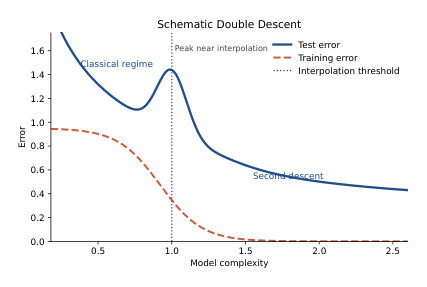
<figcaption class="paper-figure-caption"><b>Fig 2.</b> FIG. 1. Schematic illustration of double descent in a kernel- learning setting. As model complexity approaches the inter- polation threshold, the test error can peak before decreasing again in a deeper interpolating regime.</figcaption>
</figure>
<figure class="paper-figure-card">
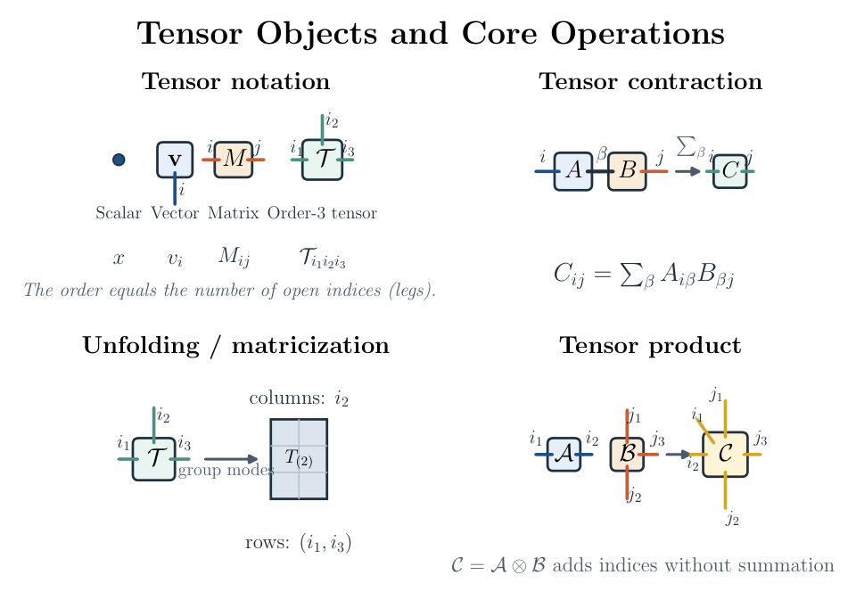
<figcaption class="paper-figure-caption"><b>Fig 3.</b> FIG. 3. Schematic overview of tensor notation and basic multilinear operations. Top left: scalars, vectors, matrices, and higher- order tensors are distinguished by the number of open indices (legs). Top right: tensor contraction sums over a shared index, generalizing matrix multiplication. Bottom left: unfolding or matricization groups tensor modes into a matrix so that standard linear algebra tools such as SVD can be applied. Bottom right: the tensor product combines two tensors by concatenating their index sets without summing over any shared mode.</figcaption>
</figure>
<figure class="paper-figure-card">
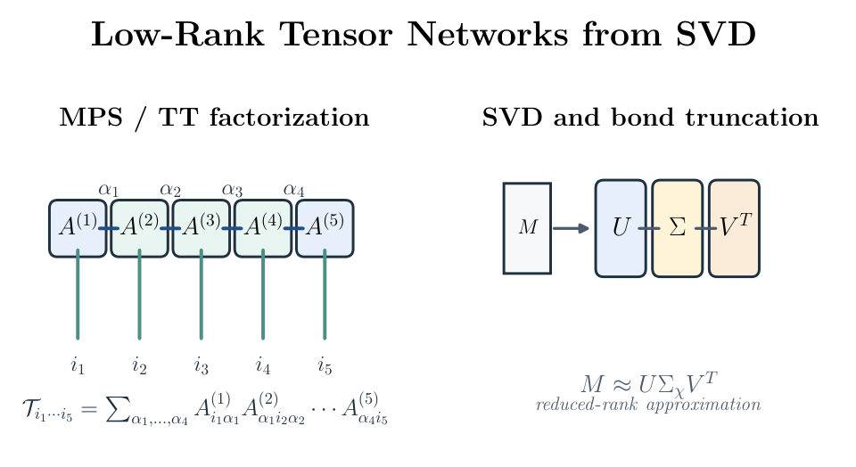
<figcaption class="paper-figure-caption"><b>Fig 4.</b> FIG. 4. Two core ideas behind tensor-network representations. Left: an order-n tensor can be factorized into a chain of low-order cores in an MPS or TT decomposition, where the physical indices remain open and the virtual bonds αk transmit correlations between neighboring cores. Right: SVD exposes the singular spectrum across a bipartition, and keeping only the largest χ singular values yields a low-rank approximation that sets the effective bond dimension and compresses the representation.</figcaption>
</figure>
</div>

<p><strong>Summary.</strong> This review surveys the symbiotic relationship between Artificial Intelligence and Quantum Information. It details how AI can be used to control and optimize quantum hardware, while simultaneously exploring how quantum principles (like entanglement or tensor structures) can enhance classical machine learning models. The paper concludes that true progress requires deep integration across theory, experiment, and hybrid systems.</p>
<p><strong>Why it may be interesting.</strong> It provides a high-level roadmap connecting quantum computation theory with modern machine learning paradigms, which is crucial for understanding future computational capabilities.</p>
<details>
<summary>Detailed structure</summary>
<p><strong>Main problem.</strong> The paper reviews the rapidly co-evolving interface between Artificial Intelligence (AI) and Quantum Information (QI), focusing on how each field can advance the other.</p>
<p><strong>Main result.</strong> Progress requires a tighter integration of theory, experiment, and hybrid quantum-classical systems to overcome challenges in reproducibility and hardware realism.</p>
<p><strong>Method.</strong> The review organizes progress into two directions: AI for QI (e.g., optimizing quantum algorithms) and QI for AI (e.g., using quantum structures for neural network design).</p>
<p><strong>Model / system.</strong> The core models involve quantum systems described by density operators ($
ho$) on a Hilbert space, analyzed through measurements (POVMs) and expectation values.</p>
<p><strong>Key observables.</strong> Reduced density operators ($
ho_A$), expectation values $\langle O 
angle_
ho$, and measurement probabilities $p_
ho(s)$.</p>
<p><strong>Important parameters / regimes.</strong> The complexity of the system size ($n$) and the noise/measurement limitations are central constraints.</p>
<p><strong>Assumptions / limitations.</strong> Progress relies on mapping quantum information problems onto classical learning frameworks, which is helpful but limited by physical measurement constraints.</p>
<p><strong>Paper structure.</strong> The paper provides a comprehensive survey structured around the two-way street between AI and QI, detailing specific tasks in both directions (e.g., algorithm discovery, noise control, expressivity).</p>
</details>
<details>
<summary>Abstract</summary>
<p>Artificial intelligence (AI) and quantum information (QI) are rapidly co-evolving. AI is becoming a practical tool for learning, designing, controlling, and verifying quantum systems, while QI offers new computational models, representational structures, and learning-theoretic questions for AI. This survey reviews the interface from both directions. In the AI for QI direction, we organize recent progress around the central tasks of extracting information from limited measurements, training and discovering quantum algorithms, stabilizing noisy hardware, automating experimental and programming workflows, and extending learning-based methods to sensing and networking. In the QI for AI direction, we examine how quantum computation and quantum-inspired structures affect learning through algorithmic speedups, expressivity, trainability, generalization, neural-network design, and tensor-network representations. We close by identifying cross-cutting challenges in reproducibility, scalability, hardware realism, and co-design, arguing that progress will depend on tighter integration of theory, experiment, and hybrid quantum--classical systems.</p>
</details>
<p><sub><a href="#top">↑ back to top</a></sub></p>

<p><a id="paper-2607.00786"></a></p>
<h3 id="bias-preserving-gates-and-quantum-error-correction-with-dual-rail-cat-codes"><a href="http://arxiv.org/abs/2607.00786v1">Bias-Preserving Gates and Quantum Error Correction With Dual-Rail Cat Codes</a></h3>
<p><strong>Authors:</strong> Debjyoti Biswas, Nikhil Sharma, Alberto Salvador, Rui Wang, Mats Granath, Adithi Udupa, Giulia Ferrini<br>
<strong>Type:</strong> theory · <strong>Category:</strong> quantum information and computing · <strong>PDF:</strong> <a href="https://arxiv.org/pdf/2607.00786v1">https://arxiv.org/pdf/2607.00786v1</a><br>
<strong>Analysis basis:</strong> full PDF text, analyzed in chunks
<strong>Topic relevance:</strong> <code>correlated cavity matter</code> <strong>3/5</strong> · <code>correlated / nonlocal dissipation</code> <strong>2/5</strong> · <code>methods for driven-dissipative</code> <strong>2/5</strong> · <code>Keldysh / 2PI / non-Gaussian methods</code> <strong>1/5</strong> · <code>Tavis-Cummings &amp; cavity-many-emitter</code> <strong>1/5</strong> · <code>analog quantum simulation</code> <strong>1/5</strong> · <code>driven-dissipative phase transition</code> <strong>1/5</strong> · <code>entanglement &amp; information structure</code> <strong>1/5</strong> · <code>non-equilibrium dynamics</code> <strong>1/5</strong></p>
<div class="figure-strip-hint">↔ Scroll figures horizontally</div>
<div class="paper-figures-scroll">
<figure class="paper-figure-card">
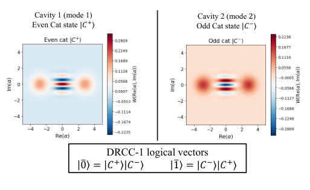
<figcaption class="paper-figure-caption"><b>Fig 1.</b> FIG. 1: Wigner function of the even and odd cat states yielding the dual-rail cat code with N = 1 (DRCC-1). The logical basis states are |¯0⟩= |C+⟩|C−⟩(Eq.(10)) and |¯1⟩= |C−⟩|C+⟩(Eq.(11)).</figcaption>
</figure>
<figure class="paper-figure-card">
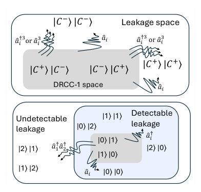
<figcaption class="paper-figure-caption"><b>Fig 2.</b> FIG. 2: For DRCC-1 (upper panel), any single-photon loss or gain, as well as arbitrary higher-order photon-loss errors ˆam i or photon-gain errors ˆa†m i on a single mode (m ≥2), either map the logical states to the even-parity leakage subspace or leave them within the odd-parity code space. For the conventional dual-rail code (lower panel), while single-photon loss or gain on either mode map the logical states to the even-parity leakage states {|00⟩, |11⟩, |02⟩, |20⟩} (detectable as erasures), higher-order photon gain processes ˆa†m i (m ≥2) can also populate other odd-parity states, such as {|12⟩, |21⟩}, leading to false-positive syndrome outcomes [20].</figcaption>
</figure>
<figure class="paper-figure-card">
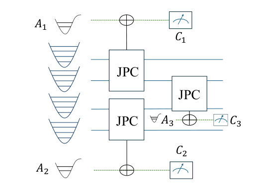
<figcaption class="paper-figure-caption"><b>Fig 3.</b> FIG. 3: Schematics for syndrome measurement and error correction with two-qubit repetition code with DRCC-1. For the syndrome measurement, we use a two-level system as an auxiliary qubit. Note that the JPC operation does not introduce entanglement between the auxiliary two-level system and the DRCC-1.</figcaption>
</figure>
<figure class="paper-figure-card">
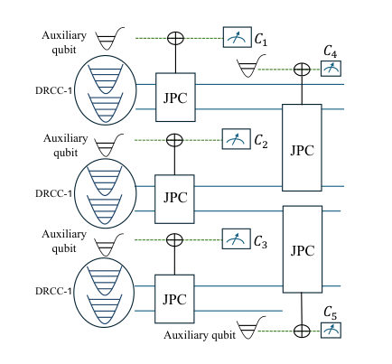
<figcaption class="paper-figure-caption"><b>Fig 4.</b> FIG. 4: Syndrome measurement scheme with the three-qubit repetition code with an inner DRCC-1.</figcaption>
</figure>
<figure class="paper-figure-card">

<figcaption class="paper-figure-caption"><b>Fig 5.</b> Fig. 5 shows the dependence of plogical on α and the noise strength.</figcaption>
</figure>
</div>

<p><strong>Summary.</strong> The paper introduces and rigorously analyzes the Dual-Rail Cat Code (DRCC), a novel concatenated bosonic code designed for fault-tolerant quantum computing. It demonstrates that DRCC inherits advantages from both dual-rail and cat codes to achieve bias-preserving logical gates and deterministic correction against photon loss. The methodology involves advanced techniques in open quantum systems, making it a significant theoretical contribution to photonic quantum information.</p>
<p><strong>Why it may be interesting.</strong> This work is highly relevant for AMO physicists working on cavity QED or quantum optics because it provides a detailed theoretical framework for implementing robust quantum computation using bosonic modes (photons/cavity fields) as the physical substrate, directly addressing noise mitigation in superconducting or optical setups.</p>
<details>
<summary>Detailed structure</summary>
<p><strong>Main problem.</strong> Developing fault-tolerant quantum computation protocols that can simultaneously support universal logical operations, suppress hardware noise, and efficiently handle photon-loss errors.</p>
<p><strong>Main result.</strong> The proposed Dual-Rail Cat Code (DRCC) offers a highly promising bosonic encoding for FTQC due to its deterministic erasure detection, absence of relative geometric phases during gates, and inherent bias preservation.</p>
<p><strong>Method.</strong> The authors analyze the error-correction properties using the Knill–Laflamme condition and construct logical gates by projecting engineered Hamiltonians onto the code subspace via continuous dissipation.</p>
<p><strong>Model / system.</strong> The system utilizes bosonic encodings, specifically the concatenated Dual-Rail Cat Code (DRCC), which combines an inner cat code with an outer dual-rail structure. The analysis involves modeling photon loss and dephasing noise using Lindblad master equations.</p>
<p><strong>Key observables.</strong> Logical error rates ($\hat{X}, \hat{Z}$ errors), relative geometric phases, success probability of correction protocols, and the satisfaction of the Knill–Laflamme condition.</p>
<p><strong>Important parameters / regimes.</strong> Photon loss strength ($\kappa$), dephasing strength ($\gamma$), cat state amplitude parameter ($\alpha$), and the order of concatenation (e.g., two-qubit or three-qubit repetition code).</p>
<p><strong>Assumptions / limitations.</strong> The analysis often relies on approximations such as the small-$\alpha$ limit for certain error detection capabilities, and assumes specific dissipation mechanisms can stabilize the desired code manifold.</p>
<p><strong>Figures summary.</strong> Figures illustrate Wigner functions of cat states, comparisons between different noise models, and schematics detailing multi-step Quantum Error Correction (QEC) protocols using joint parity checks.</p>
<p><strong>Paper structure.</strong> The paper systematically introduces the DRCC structure, analyzes its error correction under various noise channels (photon loss/dephasing), details the construction of universal logical gates via engineered dissipation, and finally proposes concatenated QEC protocols to achieve high-order fault tolerance.</p>
</details>
<details>
<summary>Abstract</summary>
<p>Scalable fault-tolerant quantum computation requires quantum error-correcting codes that simultaneously support universal logical operations, suppress hardware-specific noise, and enable efficient handling of photon-loss errors. Bosonic encodings such as the dual-rail and cat codes each offer attractive features but also exhibit important limitations when used in isolation. The dual-rail code enables efficient single-photon-loss detection by converting leakage out of the computational subspace induced by photon-loss errors into an erasure error. In contrast, the cat code provides a resource-efficient, bias-tailored error-correction scheme with bias-preserving logical gate operations. Here, we introduce the dual-rail cat code (DRCC), a concatenated bosonic encoding that combines an inner cat code with an outer dual-rail structure, thereby inheriting and enhancing the advantages of both constituent codes. We analyse the error-correction properties of the DRCC and propose a deterministic single-photon-loss correction protocol by concatenating it with an outer repetition code. Exploiting the code's intrinsic noise bias, we construct a universal set of logical gates using only beam-splitter interactions and demonstrate that all logical operations preserve the erasure-biased noise structure. The DRCC offers several distinctive advantages, including the absence of relative geometric phases during gate operations, deterministic erasure detection and correction, and simultaneous syndrome extraction without interrupting stabilisation. These features make the DRCC a promising bosonic code for hardware-efficient, bias-preserving, and erasure-resilient fault-tolerant quantum computation.</p>
</details>
<p><sub><a href="#top">↑ back to top</a></sub></p>

<p><a id="paper-2607.00688"></a></p>
<h3 id="leakage-mobility-and-passive-leakage-removal-in-transmons-with-tunable-couplers"><a href="http://arxiv.org/abs/2607.00688v1">Leakage Mobility and Passive Leakage Removal in Transmons with Tunable Couplers</a></h3>
<p><strong>Authors:</strong> Taneli Tolppanen, Gonzalo Martín-Vázquez, Sasu Tuohino, Matti Silveri<br>
<strong>Type:</strong> theory · <strong>Category:</strong> quantum information and computing · <strong>PDF:</strong> <a href="https://arxiv.org/pdf/2607.00688v1">https://arxiv.org/pdf/2607.00688v1</a><br>
<strong>Analysis basis:</strong> full PDF text, analyzed in chunks
<strong>Topic relevance:</strong> <code>correlated / nonlocal dissipation</code> <strong>3/5</strong> · <code>methods for driven-dissipative</code> <strong>3/5</strong> · <code>QC/QI experiment</code> <strong>2/5</strong> · <code>driven-dissipative phase transition</code> <strong>2/5</strong> · <code>Keldysh / 2PI / non-Gaussian methods</code> <strong>1/5</strong> · <code>non-equilibrium dynamics</code> <strong>1/5</strong> · <code>non-equilibrium universality</code> <strong>1/5</strong></p>
<div class="figure-strip-hint">↔ Scroll figures horizontally</div>
<div class="paper-figures-scroll">
<figure class="paper-figure-card">
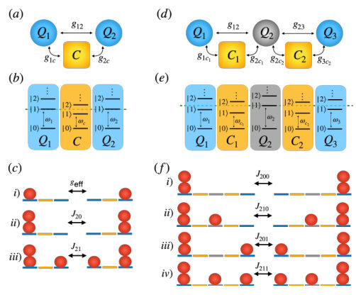
<figcaption class="paper-figure-caption"><b>Fig 1.</b> FIG. 1. Schematics of the coupled transmon systems: Two transmons and one coupler (a)-(c), and an array of coupled transmons (d)-(f). (a), (d) Connectivity map showing the coupling configurations between the transmons Qj and the mediating tunable couplers Cj. (b), (e) Anharmonic multi- level frequency spectra for the transmons and couplers. The green dashed lines indicate the reference frequencies used to define the localized detunings, given by ∆jc = ωj −ωc &gt; 0 for j = 1, 2 in panel (b), and ∆c = ω2 −ωcj &gt; 0 for j = 1, 2 alongside ∆q = ω2 −ωj for j = 1, 3 in panel (e). (c), (f) Con- ceptual illustration on the dynamics of leakage excitations (red circles) between the edge transmons (blue...</figcaption>
</figure>
<figure class="paper-figure-card">
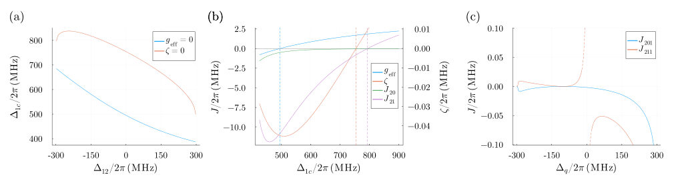
<figcaption class="paper-figure-caption"><b>Fig 2.</b> FIG. 2. (a) Coupler detunings ∆1c = ω1 −ωc where the excitation exchange geff or the ZZ interaction is eliminated, geff = 0 and ζ = 0 as a function of the two transmon detuning ∆12 = ω1 −ω2. (b) Effective coupling strengths for different coupler detuning ∆1c: excitation exchange geff for |10⟩↔|01⟩, leakage exchange J20 for |20⟩↔|02⟩and J21 for |21⟩↔|12⟩, and ZZ coupling ζ. (c) Effective leakage tunneling strengths J201 for |201⟩↔|102⟩and J211 for |211⟩↔|112⟩, when the two edge transmons are detuned from the middle transmon by ∆q and the couplers are tuned so that ζ = 0. In panel (a) the second transmon is tuned to ω2/2π = 4000 MHz, in panel (b) the two transmons are resonant ω1/2π = ω2/2π =...</figcaption>
</figure>
<figure class="paper-figure-card">

<figcaption class="paper-figure-caption"><b>Fig 3.</b> FIG. 3. (a), (e) Leakage time dynamics for two resonant transmons when the coupler is tuned so that geff = 0. (b), (f) Sensitivity of the leakage transfer to the frequency detuning between the first and second transmons. (c), (g) Maximum leakage transfer between the two transmons while the coupler is tuned so that geff = 0 or ζ = 0. (d), (h) Sensitivity of the leakage transfer to differences in anharmonicity between the transmons while the relevant transition is kept on-resonance. In the top row the initial state is |ψ0⟩= |20⟩and in the bottom row |ψ0⟩= |21⟩. We assume the transmons have identical anharmonicities, so that the detuning of the second transmon in (b) and (f) directly...</figcaption>
</figure>
<figure class="paper-figure-card">

<figcaption class="paper-figure-caption"><b>Fig 4.</b> Figure 3(e)-(h) depicts the dynamics for the setup of a leakage excitation in the first transmon and a single excitation in the second transmon. Again here we assume that the condition geff = 0. The effective |21⟩↔|12⟩ dynamics [case iii) in Fig. 1(c)] occurs now at second order involving two coupler-mediated hoppings ∼λgjc and a single direct transmon-transmon hopping g12. This leads to much faster dynamics, where the leakage propagates between the transmons in 20 ns, see Fig. 3(e). Due to the stronger effective coupling [Fig. 2(b)], the system is less sensitive to the transmon detuning ∆12, as the hopping J21 ∼λgc is more robust against variations in the energy</figcaption>
</figure>
<figure class="paper-figure-card">
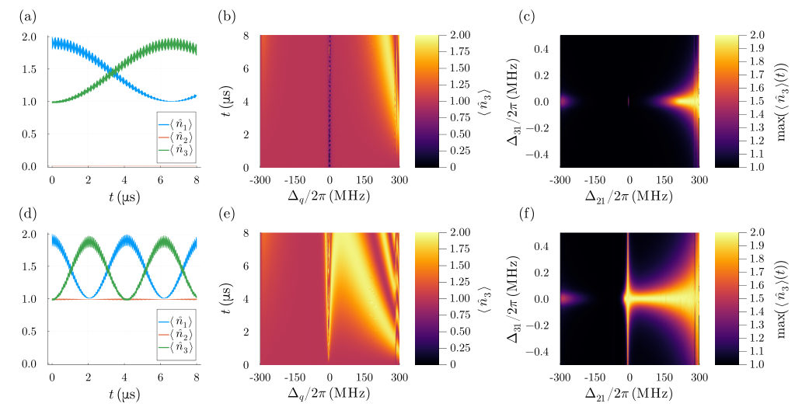
<figcaption class="paper-figure-caption"><b>Fig 5.</b> FIG. 4. Leakage tunneling in a chain of three transmons, where the edge transmons are resonant and the middle transmon is detuned by ∆q = ω2 −ω1 = ω2 −ω3. The couplers are tuned so that ζ = 0. In (a)-(c) the initial state is |ψ0⟩= |201⟩. In (d)-(f) the initial state is |ψ0⟩= |211⟩. (a), (d) Time evolution of leakage excitation. (b), (e) Time evolution of leakage excitation for different detunings ∆q. (c), (f) Sensitivity of the tunneling to the off-resonance of the edge transmons ∆31 = ω3 −ω1. For the anharmonicities, transmon-transmon coupling and transmon-coupler coupling we use same parameters as in Fig. 2. The middle transmon is kept at ω2/2π = 4000 MHz and the couplers tuned so that ζ...</figcaption>
</figure>
</div>

<p><strong>Summary.</strong> The paper investigates qubit leakage as a major error source in transmons, developing quantitative tools to characterize leakage mobility. By applying advanced perturbative techniques, it proposes and analyzes two passive hardware schemes—one coupler-based and one readout-based—to actively suppress or remove these detrimental leakage excitations.</p>
<p><strong>Why it may be interesting.</strong> This work provides detailed theoretical blueprints for mitigating decoherence sources specific to superconducting qubits by engineering the energy landscape to suppress unwanted leakage pathways.</p>
<details>
<summary>Detailed structure</summary>
<p><strong>Main problem.</strong> Qubit leakage is a significant error source in quantum processors, necessitating methods to characterize its dynamics and implement passive removal units.</p>
<p><strong>Main result.</strong> The authors propose two passive leakage removal units—one using a tunable coupler and pumped transmon, and another based on junction readout—that can selectively mobilize or localize excitations with realistic decay times.</p>
<p><strong>Method.</strong> The study employs numerical and analytical methods, utilizing Schrieffer-Wolff perturbation theory to derive effective Hamiltonians for leakage dynamics in the dispersive regime.</p>
<p><strong>Model / system.</strong> The system models superconducting transmons coupled via tunable couplers, analyzed across two-, three-, and extended transmon arrays. The Hamiltonian includes anharmonicity terms and various coupling interactions.</p>
<p><strong>Key observables.</strong> Leakage hopping rates (0.8–10 MHz), effective hopping strengths ($g_{	ext{eff}}$), leakage decay times ($T_\star$), and qubit population dynamics.</p>
<p><strong>Important parameters / regimes.</strong> Frequency detuning ($\Delta_{jc}$), anharmonicity ($U$), coupling strengths ($g_c, g_q$), and the ratio $\lambda = |g_{jc}/\Delta_{jc}|$.</p>
<p><strong>Assumptions / limitations.</strong> The analysis is primarily restricted to the dispersive regime where couplings are weak relative to detunings; higher-order terms are treated perturbatively.</p>
<p><strong>Figures summary.</strong> Figures illustrate schematics of coupled systems, resonance conditions for leakage tunneling (e.g., $|201
angle \leftrightarrow |102
angle$), and time evolution plots comparing different passive leakage removal schemes.</p>
<p><strong>Paper structure.</strong> The paper systematically analyzes the Hamiltonian, derives effective Hamiltonians using perturbation theory for various excitation transitions, identifies zero-coupling conditions via detuning control, and finally proposes and simulates two distinct passive leakage removal units.</p>
</details>
<details>
<summary>Abstract</summary>
<p>Qubit leakage is a noticeable source of errors for quantum computing. In quantum processors, leakage excitations traveling between qubits generate correlated errors and perturb gate implementations. Leakage mobility can also be utilized for creating dedicated leakage removal pathways and removal units. To quantitatively characterize leakage mobility and to guide better design of processor architectures, we study here leakage dynamics in transmons with tunable couplers through numerical and analytical methods. Even if the couplers are tuned to cancel the single-excitation exchange or the ZZ interaction, the leakage hopping rates still persists in the range of 0.8-10 MHz due to transmon nonlinearity. In typical operation regimes, however, transmon frequency detuning localizes leakage excitations. The next-nearest-neighbor transmons can be still be near-resonant opening leakage tunneling channels. To suppress longer-range hopping, we find that the frequency spread of the next-nearest-neighbor transmons needs to be in the range of 1-4 MHz. Utilizing leakage mobility, we propose two passive leakage removal units. One is based on a tunable coupler and a pumped transmon, and another on a junction readout scheme. Based on realistic experimental parameters, our results on selectively mobilizing or localizing leakage excitations are readily applicable in superconducting quantum devices.</p>
</details>
<p><sub><a href="#top">↑ back to top</a></sub></p>

<p><a id="paper-2607.01085"></a></p>
<h3 id="fisher-glasses-tail-certified-quantum-metrology-in-quenched-environments"><a href="http://arxiv.org/abs/2607.01085v1">Fisher Glasses: Tail-Certified Quantum Metrology in Quenched Environments</a></h3>
<p><strong>Authors:</strong> El Mustapha Mansouri, Keigo Arai<br>
<strong>Type:</strong> theory · <strong>Category:</strong> disordered systems and neural networks · <strong>PDF:</strong> <a href="https://arxiv.org/pdf/2607.01085v1">https://arxiv.org/pdf/2607.01085v1</a><br>
<strong>Analysis basis:</strong> full PDF text, analyzed in chunks
<strong>Topic relevance:</strong> <code>non-equilibrium dynamics</code> <strong>3/5</strong> · <code>non-equilibrium universality</code> <strong>2/5</strong> · <code>quantum measurements</code> <strong>2/5</strong> · <code>Keldysh / 2PI / non-Gaussian methods</code> <strong>1/5</strong> · <code>correlated / nonlocal dissipation</code> <strong>1/5</strong> · <code>driven-dissipative phase transition</code> <strong>1/5</strong> · <code>entanglement &amp; information structure</code> <strong>1/5</strong> · <code>methods for driven-dissipative</code> <strong>1/5</strong></p>
<div class="figure-strip-hint">↔ Scroll figures horizontally</div>
<div class="paper-figures-scroll">
<figure class="paper-figure-card">

<figcaption class="paper-figure-caption"><b>Fig 1.</b> FIG. 1. Quenched Fisher geometry: a visual abstract. (a) The averaged-channel paradigm certifies one geometry, E[J] → average QFI, whereas the quenched, non-self-averaging experiment samples a distribution of session-resolved geometries J(ξ), each fed through the noncommuting pipeline J →Fθ|µ →ℓ→CVaRα of Eq. (1), so rare near-null sessions (F⊥≈0) hidden by the average dominate the loss. (b) The certified resource is the response transverse to the latent nuisance, Fθ|µ = Jθθ sin2 ψ; for a vector target the obstruction is measurement incompatibility, quantified by the Holevo loss of Sec. V. (c) Two latent ensembles with the same mean E[F] = 1 but different inverse-loss tails, one integrable...</figcaption>
</figure>
<figure class="paper-figure-card">
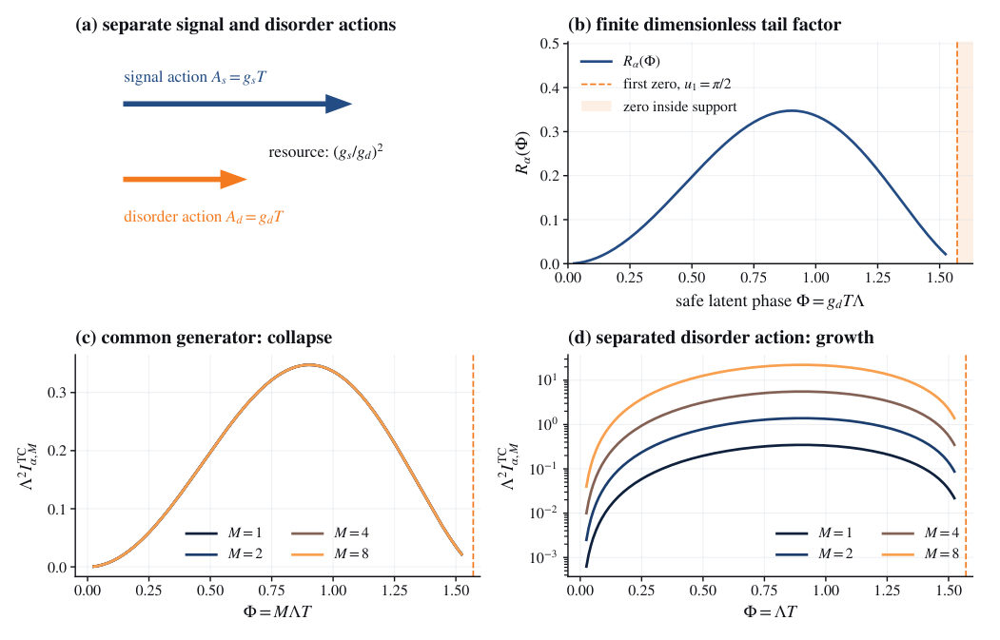
<figcaption class="paper-figure-caption"><b>Fig 2.</b> FIG. 2. Signal–disorder action separation. Tail-certified amplification is controlled by the ratio of transverse signal action to disorder action. (a) A protocol writes signal and latent disorder into the probe with generally different action gains gs and gd; the fixed-safe-phase resource is (gs/gd)2, which becomes (g⊥/gd)2 after nuisance projection. (b) Dimensionless tail factor Rα(Φ), with Φ the dimensionless safe latent phase, for a two-state Loschmidt response, with first zero at u1 = π/2; the certified information vanishes once the latent support reaches the zero. (c) Common-generator amplification, gs = gd = M and Φ = MΛT, collapses Λ2ITC α,M for different M. (d) Separated disorder...</figcaption>
</figure>
<figure class="paper-figure-card">

<figcaption class="paper-figure-caption"><b>Fig 3.</b> FIG. 3. Tail diagnostics from session losses. Left: survival functions of the inverse session loss ℓ= 1/F⊥for the four design classes: a single unsafe arm follows the nonintegrable x−1/2 law (below the finite-mean boundary β = 1), a two-arm portfolio is marginal (x−1), a zero-nondegenerate three-arm portfolio steepens to x−3/2, and a configuration-wise Fisher reserve removes the algebraic zero tail; the measured slope is the inverse-loss tail index β. Right: experimental certification from calibrated session losses: (a) survival curves distinguishing unsafe, portfolio, and reserve designs, and (b) Hill upper-tail estimates of β giving a finite-sample stability check against the β = 1...</figcaption>
</figure>
<figure class="paper-figure-card">
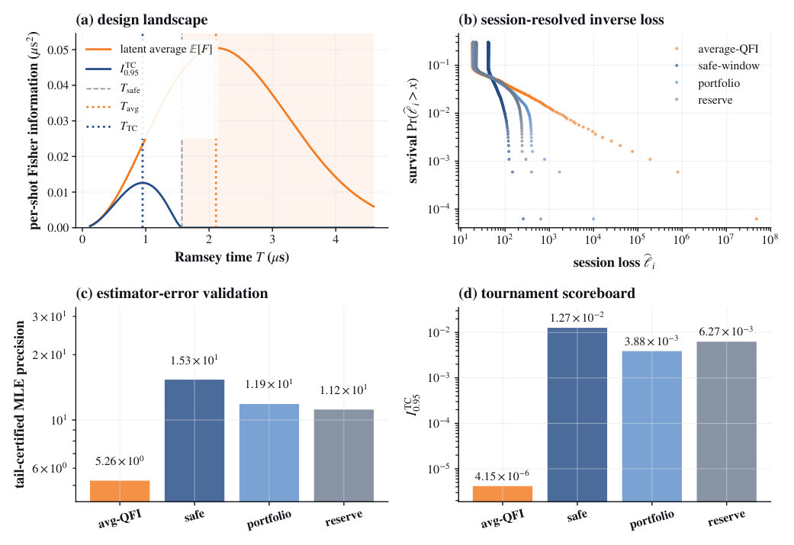
<figcaption class="paper-figure-caption"><b>Fig 4.</b> FIG. 4. Annealed winner, quenched loser. A platform-level shallow-NV design tournament compares four Ramsey protocols under the same shot budget and latent session ensemble. (a) The standard average-QFI rule selects Tavg &gt; Tsafe, crossing into the Fisher-glass region, while the tail-certified optimizer stays at TTC &lt; Tsafe. (b) Session-resolved inverse-loss tails expose the mechanism: the average-QFI arm has a much heavier bad-session tail, while portfolio and reserve designs suppress the far tail. (c) With finite calibration shots, finite sensing shots, and an explicit MLE, the plotted tail-certified MLE precision 1/CVaR0.95(MSEMLE) tracks the predicted ranking. (d) Scoreboard:...</figcaption>
</figure>
<figure class="paper-figure-card">
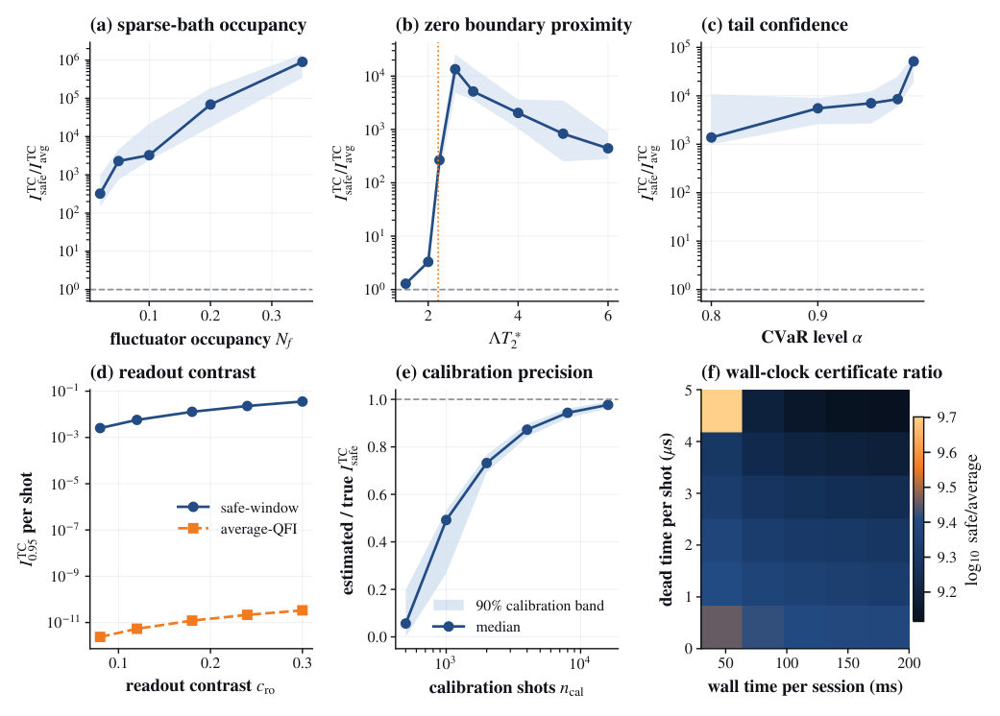
<figcaption class="paper-figure-caption"><b>Fig 5.</b> FIG. 5. Sensitivity of the platform-level certificate. Sweeps around the representative shallow-NV parameters in Table I. (a)–(c) The finite-session ratio of safe-window to average-QFI tail-certified information is shown as the median over 24 inde- pendent latent ensembles with Nsess = 32000 sessions each. Shading gives a 90% bootstrap confidence interval for the median log-ratio; the raw 10–90% ensemble spread is reported in the processed results file. The panels vary fluctuator occupancy Nf, dimensionless coupling range ΛT ∗ 2 , and CVaR level α. The dotted line in (b) marks ΛT ∗ 2 = π/ √</figcaption>
</figure>
</div>

<p><strong>Summary.</strong> The paper addresses the failure of standard quantum metrology bounds when environmental noise is 'quenched' rather than averaged over. It introduces Tail-Certified Information ($ ext{ITC}_\alpha$) using Conditional Value-at-Risk to quantify precision based on rare, adverse measurement sessions. The findings demonstrate that optimizing for average performance can be catastrophically misleading, necessitating designs robust against the worst-case noise tails.</p>
<p><strong>Why it may be interesting.</strong> This work provides a rigorous mathematical framework for quantifying the true performance limits of quantum sensors in realistic, noisy environments where noise correlations are not averaged out. It moves metrology from an idealized average bound to a robust operational guarantee.</p>
<details>
<summary>Detailed structure</summary>
<p><strong>Main problem.</strong> Standard quantum metrology bounds based on averaged Fisher information fail when environmental noise is 'quenched' (frozen during a measurement session but varies between repetitions). The goal is to develop a robust certificate for achievable precision.</p>
<p><strong>Main result.</strong> The true certified resource is determined by the Conditional Value-at-Risk ($  ext{CVaR}_\alpha$) of the inverse loss, which can be drastically lower than the average QFI. This leads to 'Fisher Glasses' where average metrics are misleadingly high.</p>
<p><strong>Method.</strong> The analysis employs advanced statistical tools like $  ext{CVaR}$ and extreme value theory applied to Fisher information derived from nuisance-projected quantum channels. It contrasts averaged channel assumptions with session-resolved, non-self-averaging statistics.</p>
<p><strong>Model / system.</strong> The study models quantum sensors (e.g., NV centers, qubits) operating in quenched environments characterized by latent disorder ($\xi$). The core mathematical framework involves projecting the full Fisher geometry onto components transverse to the nuisance directions.</p>
<p><strong>Key observables.</strong> Tail-Certified Information ($  ext{ITC}<em ext_ann="ext{ann">\alpha$), Averaged Quantum Fisher Information ($  ext{I}</em>$), Inverse Loss Exponent ($eta$), and Transverse Signal Action ($g^\perp$).}</p>
<p><strong>Important parameters / regimes.</strong> The tail exponent $eta$ (critical for determining if certification is finite, requiring $eta > 1$) and the confidence level $\alpha$ used in CVaR calculation.</p>
<p><strong>Assumptions / limitations.</strong> The analysis assumes that nuisance parameters can be projected out using techniques like Schur-complement algebra, allowing the focus on the signal component transverse to the disorder plane.</p>
<p><strong>Figures summary.</strong> Figures compare average QFI optimization against tail-certified designs (e.g., safe window/portfolio), showing significant recovery of certified information in the latter case. They also illustrate the dependence of the loss exponent ($eta$) on the design architecture.</p>
<p><strong>Paper structure.</strong> The paper systematically contrasts averaged vs. quenched metrology, develops the $ ext{CVaR}_\alpha$ certificate based on inverse-loss tails, establishes theoretical theorems regarding non-self-averaging, and applies these concepts to physical platforms like NV centers using specific design protocols (portfolios, reserves).</p>
</details>
<details>
<summary>Abstract</summary>
<p>Quantum metrological advantage is certified by averaged Fisher responses: contrast, susceptibility, or quantum Fisher information (QFI). This fails in quenched sensors, where slow environmental variables freeze within a session but vary between repetitions: shallow nitrogen-vacancy (NV) centers, superconducting qubits with slow two-level fluctuators, and semiconductor spin qubits in drifting charge noise. They sample session-resolved Fisher geometries, not an averaged channel. Certification conditions on the latent session, projects nuisance directions, inverts to attainable loss, then tail-certifies; this inverse upper-tail loss defines quenched tail-certified information. A no-go theorem: no averaged Fisher data determine this certificate; ensembles sharing averaged Fisher matrix, QFI, and projected information have finite or zero certified precision. A Fisher-zero integrability transition governs collapse: the inverse-loss tail exponent $β$ sets the boundary, with nonintegrable certified loss for $β\le 1$, even when annealed information is large or scaling. The certified quantum resource is response transverse to latent disorder, not raw amplification sharing its generator; universal design laws: safe windows, nondegenerate portfolios, Fisher reserves, action separation, Fisher-cut criteria. A shallow-NV Ramsey tournament shows average-QFI optimization is tail-catastrophic, whereas tail-certified designs recover nearly three orders of magnitude in certified information at equal shot budget and latent ensemble. These non-self-averaging phases are Fisher glasses, governed by Fisher-zero rare-event statistics.</p>
</details>
<p><sub><a href="#top">↑ back to top</a></sub></p>

<p><a id="paper-2607.00689"></a></p>
<h3 id="in-situ-polarimetry-in-collimated-magneto-infrared-spectroscopy-system"><a href="http://arxiv.org/abs/2607.00689v1">In-Situ Polarimetry in Collimated Magneto-Infrared Spectroscopy System</a></h3>
<p><strong>Authors:</strong> Zeping Shi, Wenbin Wu, Zhiwei Zhang, Yuhan Du, Chenyao Xu, Congming Hao, Xiangyu Jiang, Xin Chen, Guangyi Wang, Mingsen Zhou, Chunhui Pan, Wei Lu, Hao Shen, Haifeng Pan, Zhenrong Sun, Junhao Chu, Xiang Yuan<br>
<strong>Type:</strong> experiment · <strong>Category:</strong> strongly correlated electrons · <strong>PDF:</strong> <a href="https://arxiv.org/pdf/2607.00689v1">https://arxiv.org/pdf/2607.00689v1</a><br>
<strong>Analysis basis:</strong> full PDF text, analyzed in chunks
<strong>Topic relevance:</strong> <code>exotic spin models in light-matter</code> <strong>3/5</strong> · <code>spintronics-quantum-optics interface</code> <strong>3/5</strong> · <code>quantum optics experiment</code> <strong>2/5</strong> · <code>Kondo &amp; dissipative impurity</code> <strong>1/5</strong> · <code>analog quantum simulation</code> <strong>1/5</strong> · <code>interference shaping light</code> <strong>1/5</strong> · <code>quantum measurements</code> <strong>1/5</strong></p>
<div class="figure-strip-hint">↔ Scroll figures horizontally</div>
<div class="paper-figures-scroll">
<figure class="paper-figure-card">

<figcaption class="paper-figure-caption"><b>Fig 1.</b> Fig. 1 Schematic plot and photos of the collimated magneto-infrared spectroscopy</figcaption>
</figure>
<figure class="paper-figure-card">

<figcaption class="paper-figure-caption"><b>Fig 2.</b> Fig. 2 Design and photo of the incident collimation chamber. This chamber performs</figcaption>
</figure>
<figure class="paper-figure-card">
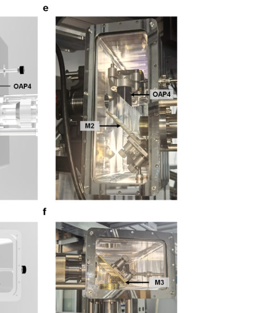
<figcaption class="paper-figure-caption"><b>Fig 3.</b> Fig. 3 Design and photo of the exit collimation chamber. The signal beam emerging</figcaption>
</figure>
<figure class="paper-figure-card">

<figcaption class="paper-figure-caption"><b>Fig 4.</b> Fig. 4 The in-situ polarization module for different configurations. Schematic diagrams</figcaption>
</figure>
<figure class="paper-figure-card">

<figcaption class="paper-figure-caption"><b>Fig 5.</b> Fig. 5 Magneto-infrared focusing modules for transmission and reflection geometries.</figcaption>
</figure>
</div>

<p><strong>Summary.</strong> The paper introduces a sophisticated magneto-infrared spectroscopy system featuring in-situ polarimetry capabilities. By employing specialized collimation optics, the setup overcomes polarization degradation caused by light reflections within high-field cryostats. This allows for continuous, quantitative measurements of polarization-dependent spectral features essential for studying quantum phenomena in condensed matter systems.</p>
<p><strong>Why it may be interesting.</strong> This work provides a highly advanced experimental platform for measuring fundamental material properties related to electron band structure and magnetoelectric coupling under extreme conditions, which is crucial input for theoretical models of correlated electronic states.</p>
<details>
<summary>Detailed structure</summary>
<p><strong>Main problem.</strong> The full potential of magneto-infrared spectroscopy for probing Landau quantization is limited by the lack of continuous, in-situ polarization control due to severe polarization degradation from beam reflections.</p>
<p><strong>Main result.</strong> The authors report a novel collimated system that achieves high polarization fidelity (extinction ratio up to 40:1) and enables continuous in-situ linear and circular polarimetry measurements under strong magnetic fields.</p>
<p><strong>Method.</strong> They designed an optical architecture using incident and exit Kepler type collimation chambers coupled with a remotely controlled polarization module outside the high-field region.</p>
<p><strong>Model / system.</strong> The platform integrates an FTIR spectrometer, superconducting magnet (up to 12 T), and interchangeable focusing modules supporting Faraday/Voigt geometries for transmission and reflection experiments within a small bore.</p>
<p><strong>Key observables.</strong> Linear polarization extinction ratio ($\ge 40:1$), minimum root-mean-square noise ($\le 0.0033\%$), and polarization-dependent spectral signatures (e.g., $C_2$ symmetry).</p>
<p><strong>Important parameters / regimes.</strong> Magnetic field strength up to 12 T; sample bore diameter of $\approx 50 	ext{ mm}$; low temperature regime ($\approx 1.7 	ext{ K}$).</p>
<p><strong>Assumptions / limitations.</strong> The primary assumption is that collimating the beam and suppressing multi-reflections significantly enhances polarization fidelity compared to conventional direct focusing.</p>
<p><strong>Figures summary.</strong> Figures illustrate the overall system schematic, detailed designs of incident/exit collimation chambers, operational modes (linear/circular polarization), and performance metrics like extinction ratio vs. aperture size.</p>
<p><strong>Paper structure.</strong> The paper details the necessity for in-situ polarimetry, presents the novel Kepler-type optical design to suppress reflections, describes the modular components (focusing modules, polarization optics), and concludes with demonstrations of continuous measurements in both linear and circular polarization modes.</p>
</details>
<details>
<summary>Abstract</summary>
<p>Magneto-infrared spectroscopy under strong magnetic fields provides a powerful probe of Landau quantization and field-induced collective excitations, yet its full potential has long been constrained by the lack of in-situ polarization control, because the highly divergent infrared beam propagating through narrow light tubes undergoes multiple wall reflections, leading to severe polarization degradation. Here we report a collimated magneto-infrared spectroscopy system that integrates continuous in-situ polarimetry. The system employs incident and exit collimation chambers forming a Kepler type optical architecture, which converts the large-aperture FTIR output into a low-divergence beam and strongly suppresses multi-reflection trajectories inside long gold-plated light tubes, thereby enhancing both optical throughput and polarization fidelity. A remotely controlled polarization module, consisting of an automated linear polarizer and a switchable Fresnel rhomb positioned entirely outside the high-field region, enables continuous in-situ tuning between linear, circular, and arbitrary elliptical polarization states without thermal cycling, manual realignment, or breaking vacuum. Interchangeable compact focusing modules further support Faraday and Voigt geometries in both transmission and reflection experiments within a 50 mm magnet bore, providing efficient beam focusing and signal collection while maintaining polarization fidelity. The setup achieves a minimum root-mean-square noise of 0.0033%, an average noise of 0.0082%, and a linear polarization extinction ratio up to 40:1. We demonstrate the capability through continuous in-situ linear polarimetry and broadband circular polarimetry in the magneto-infrared spectroscopy of various single crystals. This platform establishes a robust experimental framework for in-situ polarization-resolved magneto-infrared spectroscopy.</p>
</details>
<p><sub><a href="#top">↑ back to top</a></sub></p>

<p><a id="paper-2607.00699"></a></p>
<h3 id="dependence-of-charge-separation-efficiency-on-the-exciton-charge-transfer-offset-and-gaussian-disorder-in-organic-solar-cells"><a href="http://arxiv.org/abs/2607.00699v1">Dependence of charge separation efficiency on the exciton-charge transfer offset and Gaussian disorder in organic solar cells</a></h3>
<p><strong>Authors:</strong> Maik Schwuchow, Carsten Deibel, Angela Thränhardt<br>
<strong>Type:</strong> theory · <strong>Category:</strong> disordered systems and neural networks · <strong>PDF:</strong> <a href="https://arxiv.org/pdf/2607.00699v1">https://arxiv.org/pdf/2607.00699v1</a><br>
<strong>Analysis basis:</strong> full PDF text, analyzed in chunks
<strong>Topic relevance:</strong> <code>methods for driven-dissipative</code> <strong>3/5</strong> · <code>non-equilibrium dynamics</code> <strong>3/5</strong> · <code>non-equilibrium universality</code> <strong>2/5</strong> · <code>Keldysh / 2PI / non-Gaussian methods</code> <strong>1/5</strong> · <code>correlated / nonlocal dissipation</code> <strong>1/5</strong> · <code>driven-dissipative phase transition</code> <strong>1/5</strong></p>
<div class="figure-strip-hint">↔ Scroll figures horizontally</div>
<div class="paper-figures-scroll">
<figure class="paper-figure-card">

<figcaption class="paper-figure-caption"><b>Fig 1.</b> FIG. 1. (a) Jablonski diagram of the two-state rate model illustrating the local exciton (LE) and CT states as well as the transition and decay rate constants. (b) Exemplary plots of Eq. 3 for an increase of the exciton decay rate kLE of about 4 orders of magnitude. All other parameters are constant.</figcaption>
</figure>
<figure class="paper-figure-card">

<figcaption class="paper-figure-caption"><b>Fig 2.</b> FIG. 2. Simplified 2D schematic illustrating the main aspects of charge separation in the kinetic Monte-Carlo simulation used in this work. Local exciton (LE) generation occurs with a constant rate on a simple cubic lattice of donor (red) and acceptor (blue) sites. Excitons move diffusively without disor- der effecting the exciton energy levels. In order to separate the charges, the excitons have to dissociate into a charge trans- fer (CT) state at a donor–acceptor interface. If the charge carriers can overcome their mutual Coulomb attraction and move toward their respective electrodes (grey), an extraction event can occur. Excitons and CT states may recombine to the ground state, removing...</figcaption>
</figure>
<figure class="paper-figure-card">
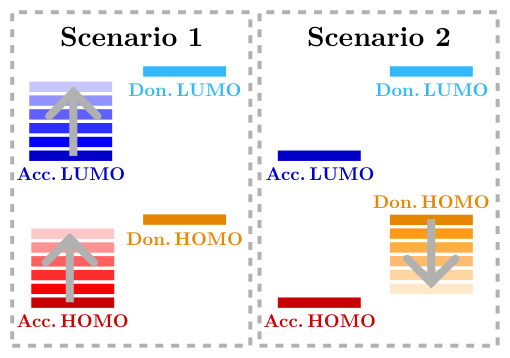
<figcaption class="paper-figure-caption"><b>Fig 3.</b> FIG. 3. Diagram illustrating the two scenarios of varying ∆ELE−CT in the simulation. Scenario 1 increases HOMO and LUMO energies of the acceptor in equal steps, keeping the donor energies constant. Scenario 2 decreases the HOMO energy of the donor, keeping the acceptor energies constant. In both cases, the energy of the CT state at a donor–acceptor interface increases (see Eq. 8). Scenario 2 also increases the donor exciton energy.</figcaption>
</figure>
<figure class="paper-figure-card">
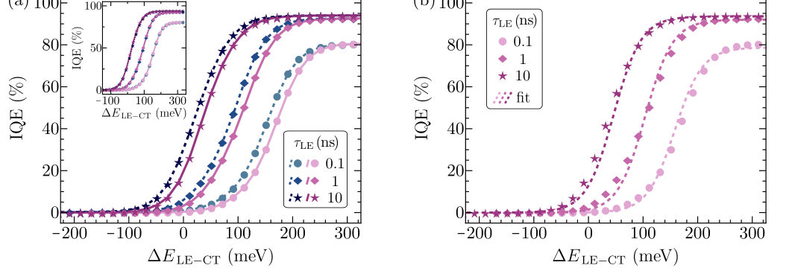
<figcaption class="paper-figure-caption"><b>Fig 4.</b> FIG. 4. (a) kMC data on the dependence of the internal quantum efficiency (IQE) on the energetic offset of local exciton (LE) and charge-transfer state (CT) for three exciton lifetimes τLE. Solid lines and red tones represent scenario 1 (varying acceptor HOMO and LUMO), dashed lines and blue tones represent scenario 2 (varying donor HOMO) of creating the offset in the simulation (see Fig. 3). The sigmoidal shape from rate model theory is clearly visible. As the offset decreases, exciton repopulation and decay increase, which limits the IQE. The inset shows, that the data for both scenarios coincides, when a horizontal shift is applied (see text). All lines (dashed and solid) are merely guides...</figcaption>
</figure>
<figure class="paper-figure-card">
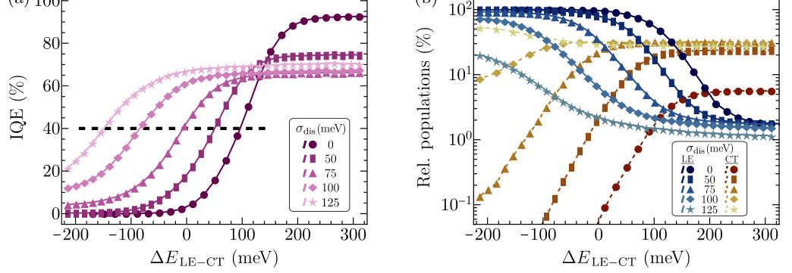
<figcaption class="paper-figure-caption"><b>Fig 5.</b> FIG. 5. (a) kMC steady-state data of the internal quantum efficiency (IQE) and (b) relative population dependence on the energetic offset between local exciton (LE) and charge transfer (CT) state ∆ELE−CT at various disorder strengths characterized by the standard deviation σdis. τLE has been set to 1 ns. In order to create the offset, scenario 1 of the energy level shift as described in the main text and Fig. 3 was used in the simulation. Introducing disorder in the classic high-offset regime reproduces the mostly detrimental trend for charge separation known in the literature (see main text), that arises from trapping and reduced carrier mobilities. Low-offset systems can greatly benefit from...</figcaption>
</figure>
</div>

<p><strong>Summary.</strong> This paper analyzes charge separation in organic solar cells, showing that while traditional models predict efficiency drops at low offsets, the inclusion of Gaussian energetic disorder can actually boost performance. By allowing thermalization within the disordered energy landscape, the system generates an effective driving force, enabling efficient operation even when the intrinsic material offset is small or negative.</p>
<p><strong>Why it may be interesting.</strong> The explicit modeling of charge carrier thermalization within a disordered density of states to generate an effective driving force is highly relevant for understanding non-equilibrium dynamics in complex quantum materials.</p>
<details>
<summary>Detailed structure</summary>
<p><strong>Main problem.</strong> The study investigates how charge separation efficiency in organic solar cells depends on the energetic offset between local exciton (LE) and charge-transfer (CT) states, particularly when significant Gaussian energetic disorder is present.</p>
<p><strong>Main result.</strong> Energetic disorder can significantly boost charge separation efficiency at intermediate and low offsets by creating an effective driving force through thermalization within the disordered density of states. This allows high performance even when the intrinsic offset is zero or negative.</p>
<p><strong>Method.</strong> The work compares results from a macroscopic two-state rate model against detailed three-dimensional kinetic Monte-Carlo (kMC) simulations to analyze charge dynamics.</p>
<p><strong>Model / system.</strong> The system models organic solar cells using donor-acceptor blends on a 3D lattice. Dynamics involve LE generation, exciton transport, and subsequent dissociation into CT states, all influenced by the offset $\Delta E_{LE-CT}$ and Gaussian disorder ($\sigma_{dis}$).</p>
<p><strong>Key observables.</strong> Internal Quantum Efficiency (IQE), steady-state populations of LE and CT states, and the average energy of the occupied CT state $\langle E_{CT} 
angle$.</p>
<p><strong>Important parameters / regimes.</strong> Exciton-Charge Transfer Offset ($\Delta E_{LE-CT}$), Disorder Strength ($\sigma_{dis}$), Temperature ($k_B T$), and material parameters like binding energies.</p>
<p><strong>Assumptions / limitations.</strong> The rate model assumes constant rates and ignores triplets; the kMC simulations focus on singlet excitons and use specific hopping/transport equations.</p>
<p><strong>Figures summary.</strong> Figures show sigmoid curves of IQE vs. offset, demonstrating how disorder causes a crossover behavior: detrimental at high offsets but beneficial at low offsets by shifting $\langle E_{CT} 
angle$.</p>
<p><strong>Paper structure.</strong> The paper first establishes the rate model's agreement with kMC in the absence of disorder, then introduces Gaussian disorder into the kMC simulation to map out the efficiency dependence on both offset and disorder strength.</p>
</details>
<details>
<summary>Abstract</summary>
<p>State-of-the-art organic solar cells increasingly rely on low-offset semiconductor blends, challenging the traditional requirement of a large energetic driving force for efficient charge separation. In these systems, the energetic offset $ΔE_{\mathrm{LE-CT}}$ between local exciton (LE) and charge-transfer (CT) states approaches the thermal energy, making exciton-CT hybridization and thermal repopulation of the exciton level critical to device performance. In this work, we directly compare a macroscopic two-state rate model with three-dimensional kinetic Monte-Carlo (kMC) simulations to investigate microscopic charge separation dynamics and the role of Gaussian energetic disorder. We demonstrate that in the absence of disorder, the analytical rate model accurately reproduces kMC predictions for the whole range of $ΔE_{\mathrm{LE-CT}}$. Specifically, the macroscopic model successfully explains horizontal shifts in the internal quantum efficiency curves that arise depending on how the energetic offset is physically realized in the constituent molecules. We show that these variations can be captured entirely through the ratio of degeneracies of the LE and CT states, respectively. Introducing Gaussian energetic disorder into the kMC simulation reveals a distinct crossover behavior depending on $ΔE_{\mathrm{LE-CT}}$. While disorder is mostly detrimental at large offsets, it can significantly boost efficiency at intermediate and low offsets. Thermalization of charge carriers within the disorder-broadened density of states creates an effective driving force allowing charge separation even at zero or negative energetic offsets.</p>
</details>
<p><sub><a href="#top">↑ back to top</a></sub></p>

<p><a id="paper-2607.00170"></a></p>
<h3 id="scaling-up-thermodynamic-ai-models"><a href="http://arxiv.org/abs/2607.00170v1">Scaling Up Thermodynamic AI Models</a></h3>
<p><strong>Authors:</strong> Andrew G. Moore<br>
<strong>Type:</strong> both · <strong>Category:</strong> disordered systems and neural networks · <strong>PDF:</strong> <a href="https://arxiv.org/pdf/2607.00170v1">https://arxiv.org/pdf/2607.00170v1</a><br>
<strong>Analysis basis:</strong> full PDF text, analyzed in chunks
<strong>Topic relevance:</strong> <code>methods for driven-dissipative</code> <strong>3/5</strong> · <code>non-equilibrium dynamics</code> <strong>2/5</strong> · <code>analog quantum simulation</code> <strong>1/5</strong> · <code>correlated / nonlocal dissipation</code> <strong>1/5</strong> · <code>correlated cavity matter</code> <strong>1/5</strong> · <code>driven-dissipative phase transition</code> <strong>1/5</strong> · <code>exotic spin models in light-matter</code> <strong>1/5</strong> · <code>non-equilibrium universality</code> <strong>1/5</strong></p>
<div class="figure-strip-hint">↔ Scroll figures horizontally</div>
<div class="paper-figures-scroll">
<figure class="paper-figure-card">

<figcaption class="paper-figure-caption"><b>Fig 1.</b> Figure 1: Our CIFAR-10 classifier. The encoder is a single classical convolution with sign activation. This is followed by six thermodynamic blocks. The classical decoder is a global average pool followed by a fully- connected linear map to the output layer. Each thermodynamic block contains three convolutional layers, as depicted in Figure 2.</figcaption>
</figure>
<figure class="paper-figure-card">

<figcaption class="paper-figure-caption"><b>Fig 2.</b> Figure 2: Architecture of a single thermodynamic block, implemented as an Ising system. It contains three layers of spins: input spins s0, hidden spins s1, and output spins s2. The input layer s0 is pinned in place. They are connected by bidirectional linear couplings, depicted in purple boxes. Couplings in an Ising system are bidirectional, but the labels indicate the forward coupling, i.e. moving downward in the diagram. The reverse couplings are the linear adjoint; for the exact relationship, see Equation (5). The hidden layer is also affected by the local magnetic fields b. Finally, an average-and-sign circuit a accumulates time-averages of s2 and outputs their signs.</figcaption>
</figure>
<figure class="paper-figure-card">

<figcaption class="paper-figure-caption"><b>Fig 3.</b> Figure 3: Empirical |z| distribution and 3-component Gaussian mixture fit for the first block of our CIFAR- 10 model.</figcaption>
</figure>
<figure class="paper-figure-card">
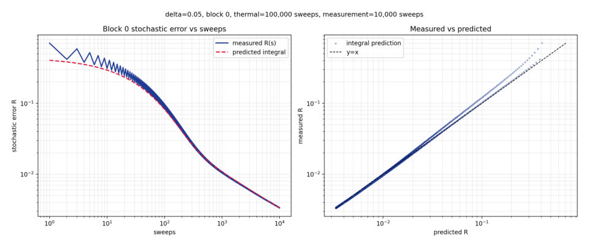
<figcaption class="paper-figure-caption"><b>Fig 4.</b> Figure 4: Measured stochastic error rate compared against numerically evaluated integral for the first block of our CIFAR-10 model. The fit is very close, but the integral does not capture the period-two oscillation caused by the chromatic Gibbs sampling.</figcaption>
</figure>
<figure class="paper-figure-card">

<figcaption class="paper-figure-caption"><b>Fig 5.</b> Figure 5: Theoretical convergence rate for a single Gaussian spike away from z = 0, with time of transition to power-law convergence visualized.</figcaption>
</figure>
</div>

<p><strong>Summary.</strong> This paper presents a novel method to train deep convolutional neural networks for inference on low-power thermodynamic hardware based on the Ising model. It achieves this by developing a scalable backpropagation algorithm that uses finite-temperature Gibbs sampling to approximate standard feed-forward computations. The work rigorously analyzes the trade-offs between computational cost (related to autocorrelation time) and classification accuracy.</p>
<p><strong>Why it may be interesting.</strong> This work provides a concrete, physics-based pathway for realizing AI hardware by embedding computation within the statistical mechanics framework of Ising models, which is highly relevant to understanding non-equilibrium dynamics and computational limits in physical systems.</p>
<details>
<summary>Detailed structure</summary>
<p><strong>Main problem.</strong> The core problem is developing scalable training methods for deep AI models intended to run on low-power, hardware-constrained thermodynamic computing devices based on the Ising model.</p>
<p><strong>Main result.</strong> The authors developed a purely backpropagation-based algorithm that successfully trains deep convolutional networks, achieving high accuracy while demonstrating that inference cost can be bounded by a controllable tradeoff with performance.</p>
<p><strong>Method.</strong> Training involves adapting standard CNNs into blocks whose computation is approximated by finite-temperature Gibbs sampling on an Ising system, using specialized loss functions (like fixed-point losses) to stabilize the training process.</p>
<p><strong>Model / system.</strong> The model uses deep convolutional networks structured as a sequence of 'thermodynamic blocks,' where each block implements its function via stochastic dynamics (Gibbs sampling) on an Ising Hamiltonian. The system relies on mapping continuous activations to thermal mean-field averages.</p>
<p><strong>Key observables.</strong> Classification accuracy (e.g., 94.9% on CIFAR-10), inference cost, and the integrated autocorrelation time ($  au_{    ext{int}}$).</p>
<p><strong>Important parameters / regimes.</strong> The temperature gradient parameter $\delta$, the number of Gibbs sweeps $G$, and regularization weights ($\lambda_{FP}$).</p>
<p><strong>Assumptions / limitations.</strong> The primary assumption is that the thermodynamic inference process can be accurately controlled by tuning parameters like $\delta$ and $G$ to approach the deterministic feed-forward limit.</p>
<p><strong>Figures summary.</strong> Figures illustrate the architecture (Encoder $ o$ Thermodynamic Blocks $   o$ Decoder) for a CIFAR-10 classifier, detailing how a single block is mapped onto an Ising system with input ($s_0$), hidden ($s_1$), and output ($s_2$) spins.</p>
<p><strong>Paper structure.</strong> The paper progresses from establishing the theoretical correspondence between high-temperature Gibbs sampling and feed-forward inference to developing specific training algorithms (Gibbs regularization) that stabilize this mapping, culminating in rigorous analysis of error sources like autocorrelation time.</p>
</details>
<details>
<summary>Abstract</summary>
<p>Thermodynamic computing devices based on the Ising model show great promise for low-power AI inference and edge computing, but scalable methods for training large models for such hardware remain limited. Prior theory shows that the time-averaged behavior of high-temperature Gibbs-sampled Ising systems can implement feed-forward neural inference. We turn this theoretical correspondence into a scalable and purely backpropagation-based algorithm for training deep convolutional networks for thermodynamic inference on Ising machine hardware. Our image classification models achieve accuracies of 94.9% on CIFAR-10 and 76.0% on CIFAR-100 under binary Gibbs sampling. We then develop and experimentally validate a mathematical theory relating inference cost to accuracy and controlling autocorrelation times. Subsequently, we calculate asymptotic results showing that inference cost is bounded by a well-controlled tradeoff with performance and exhibit algorithms for computing optimal inference schedules. Finally, we discuss implications for hardware development and the future of high-temperature thermodynamic AI models.</p>
</details>
<p><sub><a href="#top">↑ back to top</a></sub></p>

<p><a id="paper-2607.00991"></a></p>
<h3 id="tensor-network-solvers-for-ultra-large-tight-binding-hamiltonians-algorithms-and-applications"><a href="http://arxiv.org/abs/2607.00991v1">Tensor Network Solvers for Ultra-large Tight-binding Hamiltonians: Algorithms and Applications</a></h3>
<p><strong>Authors:</strong> Tiago V. C. Antão, Anouar Moustaj, Yitao Sun, Jose L. Lado<br>
<strong>Type:</strong> theory · <strong>Category:</strong> numerical methods · <strong>PDF:</strong> <a href="https://arxiv.org/pdf/2607.00991v1">https://arxiv.org/pdf/2607.00991v1</a><br>
<strong>Analysis basis:</strong> full PDF text, analyzed in chunks
<strong>Topic relevance:</strong> <code>analog quantum simulation</code> <strong>3/5</strong> · <code>methods for driven-dissipative</code> <strong>3/5</strong> · <code>non-equilibrium dynamics</code> <strong>2/5</strong> · <code>Keldysh / 2PI / non-Gaussian methods</code> <strong>1/5</strong> · <code>driven-dissipative phase transition</code> <strong>1/5</strong> · <code>entanglement &amp; information structure</code> <strong>1/5</strong></p>
<div class="figure-strip-hint">↔ Scroll figures horizontally</div>
<div class="paper-figures-scroll">
<figure class="paper-figure-card">

<figcaption class="paper-figure-caption"><b>Fig 1.</b> FIG. 1. Overview of the TensorBinding.jl framework and its current range of applications. The panels illustrate six classes of physical observable accessible within the framework: the momentum-resolved spectral function Ak,k′(ω) (top), the real- space Chern marker Cα revealing coexisting topological phases (left), self-consistent mean-field correlated phases, such as the magnetization ⟨M⟩SCF (right), time-dependent observables, such as the bond current J(t) under a driven electric field E(t) (bottom right), two-particle correlated states ⟨c† αcβc† γcδ⟩, such as excitons (bottom center), and non-hermitian spectral function ANH α,β for systems with modulated losses γ(r) (bottom left).</figcaption>
</figure>
<figure class="paper-figure-card">

<figcaption class="paper-figure-caption"><b>Fig 2.</b> FIG. 2. Mapping and benchmarks for a 1D tight-binding chain model. (a) Tight-binding model with N = 23 = 8 sites in real space and its 23 × 23 Hamiltonian matrix with hoppings tn(ri) and on-site potential V (ri). (b) Equivalent pseudospin chain of L = log2(N) = 3 sites; spin states (σ1, σ2, σ3) index real-space sites and the Hamiltonian is encoded as a 3-core MPO. The nth neighbour hoppings are encoded as MPOs Tn and the on-site term as an MPO V (c) Memory cost of full, sparse, and MPO storage of the Hamiltonian. (d) Computation time for a local density of states via exact diagonalization, sparse-matrix KPM, and the MPO KPM implemented in TensorBinding.jl. Dahed lines are estimate, scatter...</figcaption>
</figure>
<figure class="paper-figure-card">
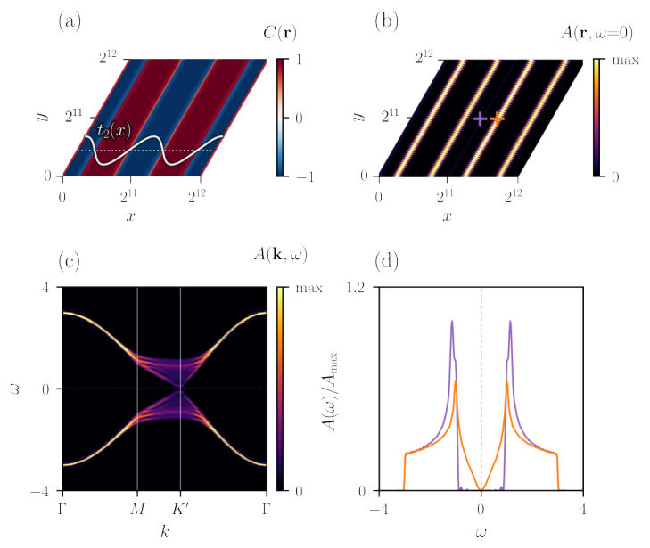
<figcaption class="paper-figure-caption"><b>Fig 3.</b> FIG. 3. Single-particle observables for the spatially modulated Haldane model of Eq. (11) with t2(x) = ¯t2 cos(2πx/λ). (a) Real- space Chern marker, with well-defined integer stripes reflecting alternating topological and trivial phases of period λ = Nx/2. (b) Zero-frequency LDOS, with intensity peaks localised at the domain walls between topological phases. (c) Band structure showing mini-band folding at the superlattice wavevector and a weak imprint of the gap-traversing chiral edge states. (d) Frequency-resolved LDOS in the bulk (top) and at a domain-wall edge (bottom), showing the gapped bulk spectrum and the in-gap chiral edge branch. The parameters used for these calculations are t1 =...</figcaption>
</figure>
<figure class="paper-figure-card">
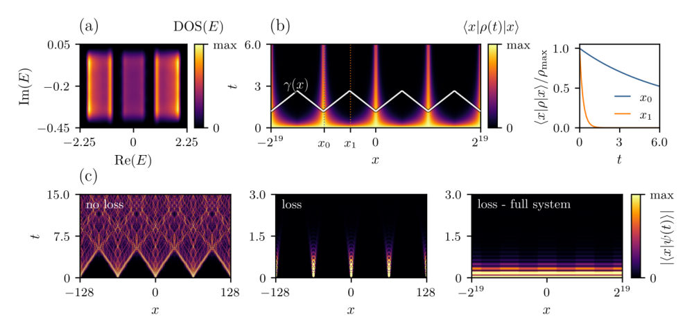
<figcaption class="paper-figure-caption"><b>Fig 4.</b> FIG. 4. Non-Hermitian observables for a 1D AAH chain with the modulated loss γ(x) following a triangular pattern under open boundary conditions. (a) Spectral weight A(Re z, Im z) in the complex energy plane from the NH KPM algorithm. (b) Space-time map of the diagonal density ⟨x|ρ(t)|x⟩evolved from the half-filled ground state via the non-Hermitian von Neumann equation (RK4), and site-density traces at the loss minimum (x0 = N/4, γ = 0) and loss maximum (x = 3N/8, γ = 2γ0). (c) Single-particle amplitude |⟨x|ψ(t)⟩| from TDVP for a comb wavepacket shown in the central region of a Hermitian chain (left) and a lossy chain (middle), zoomed in a region of width w = 256 sites, and across the full...</figcaption>
</figure>
<figure class="paper-figure-card">

<figcaption class="paper-figure-caption"><b>Fig 5.</b> FIG. 5. Mean-field Hubbard and exciton observables for spatially modulated systems. (a) Absolute mean-field Hubbard magnetization |mi|, showing stripe order induced by the modulated hopping. (b) Spin-summed mean-field spectral function A(k, ω) along the high-symmetry path, showing the reconstructed quasiparticle bands of the converged magnetic state and its correlated gap. (c) Exciton local density of states ρ(x, ω), showing bound-state spectral weight localized in energy and modulated periodically in space, with moir´e minibands as a consequence of the incommensurability of the on-site modulation V (x). (d) Total exciton density of states, separated into scattering-continuum and...</figcaption>
</figure>
</div>

<p><strong>Summary.</strong> The paper introduces a unified tensor-network methodology to solve tight-binding Hamiltonians on ultra-large systems, enabling simulations up to billions of sites. By mapping real-space problems onto MPO representations, it efficiently calculates key observables like spectral functions and topological invariants without storing massive matrices. This breakthrough allows for the study of complex quantum matter in regimes previously inaccessible due to computational cost.</p>
<p><strong>Why it may be interesting.</strong> This work provides a powerful computational toolkit that extends beyond standard DMRG or exact diagonalization limits, making it highly relevant for studying complex quantum materials where system sizes are the primary bottleneck.</p>
<details>
<summary>Detailed structure</summary>
<p><strong>Main problem.</strong> Developing scalable numerical techniques to simulate quantum systems described by tight-binding Hamiltonians on ultra-large lattices (billions of sites).</p>
<p><strong>Main result.</strong> The methodology enables routine simulation of systems with billions of sites by keeping the memory footprint logarithmic in system size, overcoming limitations of explicit matrix methods.</p>
<p><strong>Method.</strong> It employs a unified tensor-network approach, mapping large real-space Hamiltonians onto Matrix Product Operators (MPOs) defined on an L-pseudospin chain. Key techniques include using quantics tensor cross interpolation and applying the Kernel Polynomial Method (KPM).</p>
<p><strong>Model / system.</strong> The models are general tight-binding Hamiltonians applicable to moiré superlattices, quasicrystals, and systems requiring non-Hermitian or correlated descriptions (e.g., Hubbard model, excitons). The system size $N$ can reach $10^{12}$ sites.</p>
<p><strong>Key observables.</strong> Spectral functions ($A(\mathbf{k}, \omega)$), Local Density of States (LDOS), real-space topological invariants (Chern markers), and time evolution dynamics ($\langle x|
ho(t)|x
angle$).</p>
<p><strong>Important parameters / regimes.</strong> System size $N$ up to billions of sites; bond dimension remaining modest (order of tens); energy $\omega \in (-1, 1)$ or complex energies for non-Hermitian analysis.</p>
<p><strong>Assumptions / limitations.</strong> The method relies on the tensor network compressibility of real-space structures and assumes that physical observables can be efficiently represented as MPOs/MPSs.</p>
<p><strong>Figures summary.</strong> Figures illustrate the mapping from real-space lattices to pseudospin chains, comparing memory scaling (MPO vs. full matrix), and showing the construction of spectral operators and topological markers using tensor contractions.</p>
<p><strong>Paper structure.</strong> The paper details the mathematical framework by first establishing the MPO representation for Hamiltonians on various lattices (1D/2D) via shift tensors. It then outlines algorithms for calculating observables like spectral functions (via KPM), topological invariants, and time evolution (via von Neumann equation solvers).</p>
</details>
<details>
<summary>Abstract</summary>
<p>Understanding quantum materials at meso and even macroscopic scales requires tight-binding calculations on system sizes where explicit matrix representations become prohibitively costly. This represents a major bottleneck to rationalize phenomena in moiré and super-moiré heterostructures and quasicrystals. Here, we present a unified tensor-network methodology to solve tight-binding problems at exceptionally large scales, by mapping a system of $N = 2^L$ sites onto a many-body problem of $L$ pseudospin sites, which is subsequently solved with tensor network algorithms. For Hamiltonians with compressible real-space structure, the tensor network bond dimension remains modest, typically of order a few tens, independent of $N$.Tensor network representations of arbitrary hopping functions including long-range, spatially modulated, and twisted-layer couplings are built with quantics tensor cross interpolation, and all physical observables are evaluated entirely with tensor network algebra without explicit matrix storage or diagonalization. We demonstrate applications to spectral functions, momentum-space spectra via the tensor-network quantum Fourier transform, real-space topological invariants, real-time dynamics, correlation induced symmetry breaking with self-consistent mean-field calculations, non-Hermitian phenomena, and excitonic many-body physics. Our methodology enables routinely solving systems with billions of sites, by leveraging the tensor network compressibility of real-space structures, and establishing a flexible framework to study quantum matter at ultra-large length scales. The methodology is implemented in the open-source Julia package TensorBinding.jl.</p>
</details>
<p><sub><a href="#top">↑ back to top</a></sub></p>

<p><a id="paper-2607.01030"></a></p>
<h3 id="analytical-connection-between-exact-and-approximate-solutions-of-the-periodically-driven-two-level-system-starting-from-the-heun-equation"><a href="http://arxiv.org/abs/2607.01030v1">Analytical connection between exact and approximate solutions of the periodically-driven two-level system starting from the Heun equation</a></h3>
<p><strong>Authors:</strong> Pietro Follia, Bassano Vacchini<br>
<strong>Type:</strong> theory · <strong>Category:</strong> other · <strong>PDF:</strong> <a href="https://arxiv.org/pdf/2607.01030v1">https://arxiv.org/pdf/2607.01030v1</a><br>
<strong>Analysis basis:</strong> full PDF text, analyzed in chunks
<strong>Topic relevance:</strong> <code>methods for driven-dissipative</code> <strong>3/5</strong> · <code>non-equilibrium dynamics</code> <strong>3/5</strong> · <code>driven-dissipative phase transition</code> <strong>2/5</strong> · <code>Keldysh / 2PI / non-Gaussian methods</code> <strong>1/5</strong> · <code>non-equilibrium universality</code> <strong>1/5</strong></p>
<div class="figure-strip-hint">↔ Scroll figures horizontally</div>
<div class="paper-figures-scroll">
<figure class="paper-figure-card">

<figcaption class="paper-figure-caption"><b>Fig 1.</b> FIG. 1. The figure provides a logical scheme of the connections between the different equations and their solutions and limits considered in the manuscript. Here, ψWD(t) denotes the approximate solution in the weak-driving regime [see Eq. (69)], ψHF(t) the high-frequency solution [see Eq. (84)], and ψRWA(t) the solution in the rotating-wave approximation [see Eq. (79)]. According to Eqs. (51), (52) and (71) we have ˜f = f/ω, ˜ ω0 = ω0/2ω and ˜∆= ∆/ω respectively, that define the relevant limiting situations.</figcaption>
</figure>
</div>

<p><strong>Summary.</strong> This paper analytically connects the exact solutions for a periodically-driven two-level system when subjected to different driving fields, such as linear versus rotating-wave approximations. By mapping the problem onto Heun differential equations, the authors establish a unified mathematical framework that correctly reproduces known physical effects like the Bloch-Siegert shifts in various limiting regimes.</p>
<p><strong>Why it may be interesting.</strong> This work provides deep analytical insight into open quantum systems dynamics by connecting exact solutions to highly specialized mathematical functions (Heun equations), which is crucial for understanding driven quantum optics phenomena.</p>
<details>
<summary>Detailed structure</summary>
<p><strong>Main problem.</strong> The primary goal is establishing a rigorous, analytical connection between the exact solutions for a periodically-driven two-level system (TLS) under different driving conditions, specifically linear vs. rotating-wave approximation.</p>
<p><strong>Main result.</strong> The authors successfully derive this analytic link by mapping the dynamics onto Heun differential equations and utilizing path-multiplicative Floquet solutions to recover known physical limits like the Stark and Bloch-Siegert shifts.</p>
<p><strong>Method.</strong> The methodology involves transforming the time-dependent Schrödinger equation into a second-order ODE, which is then solved by relating it to the general forms of Heun or Confluent Heun equations via hypergeometric function expansions.</p>
<p><strong>Model / system.</strong> The system studied is a two-level atom (TLS) subjected to periodic external driving fields. The dynamics are governed by a time-dependent Hamiltonian involving Pauli matrices, leading to differential equations solvable in terms of special functions.</p>
<p><strong>Key observables.</strong> The population dynamics and coherence decay rates of the TLS; specific shifts like the Stark and Bloch-Siegert shifts are key derived quantities.</p>
<p><strong>Important parameters / regimes.</strong> Driving strength ($f$), system frequency ($\omega_0$), driving frequency ($\omega$), and detuning parameters ($\Delta$). The analysis explores weak-driving and high-frequency limits.</p>
<p><strong>Assumptions / limitations.</strong> The core mathematical machinery relies on expressing local solutions via hypergeometric functions derived from path-multiplicative Floquet solutions, which are subject to limitations regarding periodicity and resonance conditions.</p>
<p><strong>Figures summary.</strong> Not specified in the notes; the focus is on deriving analytical connections between solution forms (e.g., Eq. 32, Eq. 41, Eq. 85).</p>
<p><strong>Paper structure.</strong> The paper progresses by first defining the physical problem and mapping it to Heun/Confluent Heun equations (Sections II &amp; III), then detailing the mathematical machinery using Floquet solutions and hypergeometric functions, establishing the connection through perturbative analysis of limiting cases (Sections IV &amp; V).</p>
</details>
<details>
<summary>Abstract</summary>
<p>We investigate and establish an analytic connection between the exact solutions describing the dynamics of a two-level system driven by periodic external fields, focusing on the cases of linear driving and the so-called rotating-wave approximation, or circular driving. In both cases, the exact solutions can be obtained by mapping the Schrodinger equation onto Heun equations: the confluent Heun equation for linear driving and the Heun equation for the rotating-wave case. In particular, we demonstrate a direct analytic connection between the exact solutions for linear driving and those for the rotating-wave case. This result is obtained by analyzing local solutions expressed in terms of hypergeometric functions, which, in the case of the confluent Heun equation, can be derived by considering path-multiplicative Floquet solutions involving a bilateral series. This series leads to two continued-fraction expansions that can be perturbatively solved by imposing a suitable consistency condition. The connection between the linear-driving and rotating-wave solutions is established through a perturbative procedure that allows us to recover not only the rotating-wave approximation itself, but also the correct Stark and Bloch-Siegert shifts, as well as the so-called high-frequency approximation.</p>
</details>
<p><sub><a href="#top">↑ back to top</a></sub></p>

<p><a id="paper-2607.00134"></a></p>
<h3 id="phase-distinction-of-gibbs-states-without-symmetry-breaking-topological-invariants-of-the-3d-toric-code"><a href="http://arxiv.org/abs/2607.00134v1">Phase distinction of Gibbs states without symmetry breaking: topological invariants of the 3D toric code</a></h3>
<p><strong>Authors:</strong> Haruki Watanabe<br>
<strong>Type:</strong> theory · <strong>Category:</strong> statistical mechanics · <strong>PDF:</strong> <a href="https://arxiv.org/pdf/2607.00134v1">https://arxiv.org/pdf/2607.00134v1</a><br>
<strong>Analysis basis:</strong> full PDF text, analyzed in chunks
<strong>Topic relevance:</strong> <code>entanglement &amp; information structure</code> <strong>3/5</strong> · <code>analog quantum simulation</code> <strong>2/5</strong> · <code>Keldysh / 2PI / non-Gaussian methods</code> <strong>1/5</strong> · <code>correlated / nonlocal dissipation</code> <strong>1/5</strong> · <code>driven-dissipative phase transition</code> <strong>1/5</strong> · <code>exotic spin models in light-matter</code> <strong>1/5</strong> · <code>methods for driven-dissipative</code> <strong>1/5</strong></p>
<div class="figure-strip-hint">↔ Scroll figures horizontally</div>
<div class="paper-figures-scroll">
<figure class="paper-figure-card">
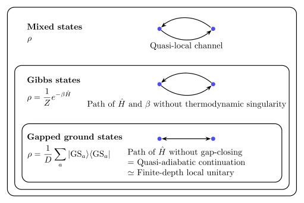
<figcaption class="paper-figure-caption"><b>Fig 1.</b> FIG. 1. The three tiers of states and their phase-equivalence relations. Pure gapped ground states (bottom) are classified by finite-depth local unitaries—equivalently, quasi-adiabatic continuation along a path of local Hamiltonians with no gap closing [15, 16]. General mixed states (top) are classified by two-way quasi-local channels [17–19]. The intermediate Gibbs tier is classified by a path of local Hamiltonians with no ther- modynamic singularity.</figcaption>
</figure>
<figure class="paper-figure-card">
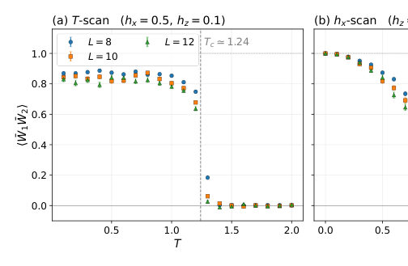
<figcaption class="paper-figure-caption"><b>Fig 2.</b> FIG. 2. The σz Wilson-loop two-point correlator ⟨¯ W1 ¯ W2⟩= ⟨Q</figcaption>
</figure>
<figure class="paper-figure-card">
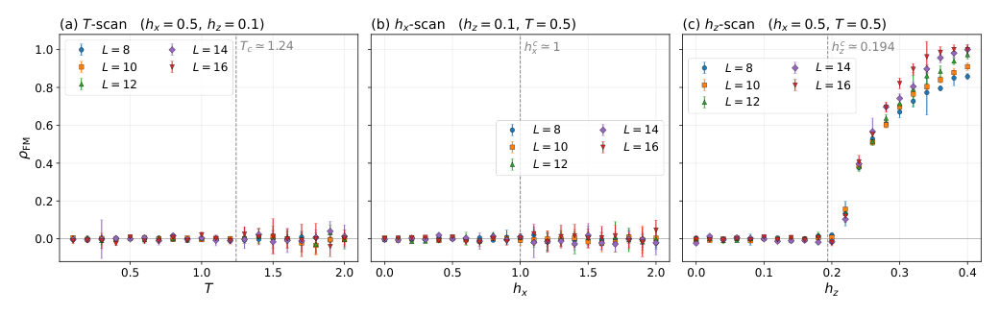
<figcaption class="paper-figure-caption"><b>Fig 3.</b> FIG. 3. Electric (σz-basis) Fredenhagen–Marcu string order parameter ρFM on the three orthogonal cuts through (hx, hz, T) = (0.5, 0.1, 0.5) (512 seeds/point, per-seed median, L = 8–16): (a) T-scan (hx = 0.5, hz = 0.1), (b) hx-scan (hz = 0.1, T = 0.5), and (c) hz-scan (hx = 0.5, T = 0.5). Across the thermal transition at Tc ≃1.24 (a) and the magnetic transition at hx c ≃1 (b), ρFM stays flat (to ±0.02) at all sizes; it rises continuously from 0 to a positive constant only on the electric (hz) cut (c), with onset near the zero-temperature critical value hz c ≃0.194.</figcaption>
</figure>
<figure class="paper-figure-card">
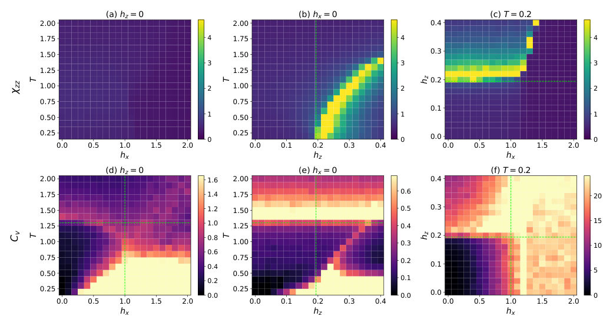
<figcaption class="paper-figure-caption"><b>Fig 4.</b> FIG. 4. Bulk thermodynamic response on the three coordinate planes (L = 8, 64 seeds). Top row, the electric susceptibility χzz: (a) the (hx, T) plane at hz = 0, (b) the (hz, T) plane at hx = 0, and (c) the (hx, hz) plane at T = 0.2. Bottom row, the specific heat Cv on the same three planes: (d), (e), and (f), respectively. Lime lines mark the Reiss–Schmidt zero-temperature critical fields hx c = 1, hz c = 0.194 and the duality-derived T (0,0) c ≈1.3133.</figcaption>
</figure>
<figure class="paper-figure-card">
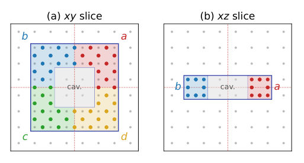
<figcaption class="paper-figure-caption"><b>Fig 5.</b> FIG. 5. Four-quadrant partition a, b, c, d of the annular Levin–Wen shell at L = 8, shown in (a) an xy slice (z ∈[3, 4]) and (b) an xz slice (y ∈[3, 4]); z is the shell’s symmetry axis and “cav.” marks the central cavity. The Levin–Wen regions A1, . . . , A4 are built from these quadrants (see text).</figcaption>
</figure>
</div>

<p><strong>Summary.</strong> This paper addresses the challenge of identifying topological phases at finite temperature without relying on symmetry breaking. By analyzing the 3D $\mathbb{Z}_2$ toric code, the authors introduce a novel, robust order parameter called $f_W$. This invariant successfully distinguishes between topologically ordered and trivial phases across complex field-temperature regimes where traditional measures fail.</p>
<p><strong>Why it may be interesting.</strong> The work provides a powerful, non-symmetry-breaking diagnostic tool ($f_W$) for characterizing topological order in realistic thermal settings, which is crucial for understanding quantum phase transitions in condensed matter systems.</p>
<details>
<summary>Detailed structure</summary>
<p><strong>Main problem.</strong> The central problem is determining if sharp phase distinctions can be identified for topological order at non-zero temperature ($T>0$) without relying on spontaneous symmetry breaking (SSB). The authors seek robust, quasi-local-channel invariants to classify these mixed states.</p>
<p><strong>Main result.</strong> A new diagnostic, the decoded Wilson-loop correlation $f_W$, is introduced and shown to be a robust invariant that quantizes to 1 in the topological phase and 0 in the trivial phase at finite temperature. This distinguishes phases where traditional measures like entanglement entropy ($\gamma$) fail.</p>
<p><strong>Method.</strong> The study combines perturbative calculations, large-scale Quantum Monte Carlo simulations on the thermal Gibbs state, and theoretical analysis of various correlation functions (Wilson loops, string order parameters).</p>
<p><strong>Model / system.</strong> The system analyzed is the three-dimensional ($ ext{3D}$) $\mathbb{Z}_2$ toric code subjected to generic magnetic fields and finite temperature. The Hamiltonian/Gibbs measure describes the thermal state $
ho_eta = e^{-eta \hat{H}/Z}$.</p>
<p><strong>Key observables.</strong> Topological Entanglement Entropy ($\gamma$), Decoded Wilson-loop correlation ($f_W$), Fredenhagen–Marcu string order parameter ($
ho_{    ext{FM}}$), and various thermodynamic responses like specific heat ($C_v$).</p>
<p><strong>Important parameters / regimes.</strong> Temperature ($T$), external magnetic fields $(h_x, h_z)$, and the lattice size $L$. The critical point is often compared to the 3D Ising universality class.</p>
<p><strong>Assumptions / limitations.</strong> The authors must contend with the ambiguity of phase equivalence relations for Gibbs states at $T>0$, sometimes assuming quasi-static traversal through Lindbladian channels.</p>
<p><strong>Figures summary.</strong> Figures illustrate how different observables (Wilson loops, $
ho_{    ext{FM}}$) show differential sensitivity to magnetic, electric, and thermal fields across the $(h_x, h_z, T)$ phase diagram. Table I summarizes diagnostic values for various models.</p>
<p><strong>Paper structure.</strong> The paper systematically compares multiple diagnostics ($\gamma$, Wilson loops, etc.) against known transitions (thermal $T_c$, magnetic $h_x^c$, electric $h_z^c$). It culminates in the proposal and rigorous demonstration of $f_W$ as the universal invariant resolving all three boundaries.</p>
</details>
<details>
<summary>Abstract</summary>
<p>We study the finite-temperature topological order of the three-dimensional $\mathbb{Z}_2$ toric code in a generic magnetic field, where every higher-form symmetry is explicitly broken and can at most be emergent. We show perturbatively, and confirm by large-scale quantum Monte Carlo, that the topological entanglement entropy stays quantized at $γ= \ln 2$ throughout the topological phase -- at finite temperature and under the symmetry-breaking field alike -- and collapses to $0$ across the thermal transition, a quantization protected geometrically by the Bianchi identity rather than by any exact symmetry of the system. The plateau $γ= \ln 2$ is, however, not invariant under quasi-local channels: a constant-depth channel can generate this identical quantized value from a trivial product state. We therefore introduce the decoded Wilson-loop correlation $f_W$, which quantizes to $1$ in the topological phase and $0$ in the trivial phase as $L\to\infty$ and, unlike $γ$, is a quasi-local-channel invariant -- a robust topological invariant of the mixed state.</p>
</details>
<p><sub><a href="#top">↑ back to top</a></sub></p>

<p><a id="paper-2607.00837"></a></p>
<h3 id="twisted-gaussian-schell-states-in-quantum-optics-twist-assisted-nonclassicality-and-entanglement"><a href="http://arxiv.org/abs/2607.00837v1">Twisted Gaussian Schell States in Quantum Optics: Twist-Assisted Nonclassicality and Entanglement</a></h3>
<p><strong>Authors:</strong> Fabricio Toscano, G. Cañas, A. Z. Khoury, P. H. Souto Ribeiro, S. P. Walborn<br>
<strong>Type:</strong> theory · <strong>Category:</strong> other · <strong>PDF:</strong> <a href="https://arxiv.org/pdf/2607.00837v1">https://arxiv.org/pdf/2607.00837v1</a><br>
<strong>Analysis basis:</strong> full PDF text, analyzed in chunks
<strong>Topic relevance:</strong> <code>entanglement &amp; information structure</code> <strong>3/5</strong> · <code>interference shaping light</code> <strong>3/5</strong> · <code>Keldysh / 2PI / non-Gaussian methods</code> <strong>1/5</strong> · <code>analog quantum simulation</code> <strong>1/5</strong> · <code>driven-dissipative phase transition</code> <strong>1/5</strong> · <code>methods for driven-dissipative</code> <strong>1/5</strong></p>
<div class="figure-strip-hint">↔ Scroll figures horizontally</div>
<div class="paper-figures-scroll">
<figure class="paper-figure-card">

<figcaption class="paper-figure-caption"><b>Fig 1.</b> FIG. 1. Scheme to generate the TGS state from two indepen- dent thermal modes. From Eq. (8), the state is generated by the inverse transformation S−1 = O′−1S−1 d O−1 acting on the thermal input. See text for details.</figcaption>
</figure>
<figure class="paper-figure-card">
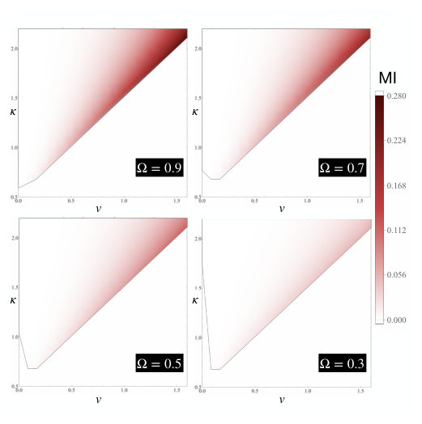
<figcaption class="paper-figure-caption"><b>Fig 2.</b> FIG. 2. Density plots of the mutual information in Eq. (38) for the joint photon distribution P(n1, n2) in Eq. (32), and marginals in (39), of a TGS state. See text for explanation.</figcaption>
</figure>
<figure class="paper-figure-card">
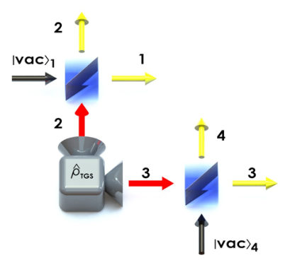
<figcaption class="paper-figure-caption"><b>Fig 3.</b> FIG. 4. Scheme to activate entanglement from the TGS state. The two-mode TGS state (modes 2 and 3) is mixed with two ancillary vacuum modes (modes 1 and 4) at balanced beam splitters. The output four-mode state Vf is separable in the 12|34 bipartition (since the beam splitters are local with re- spect to that cut) but can be entangled in the cross biparti- tions 14|23 and 13|24, depending on the values of κ, Ω, and v.</figcaption>
</figure>
<figure class="paper-figure-card">
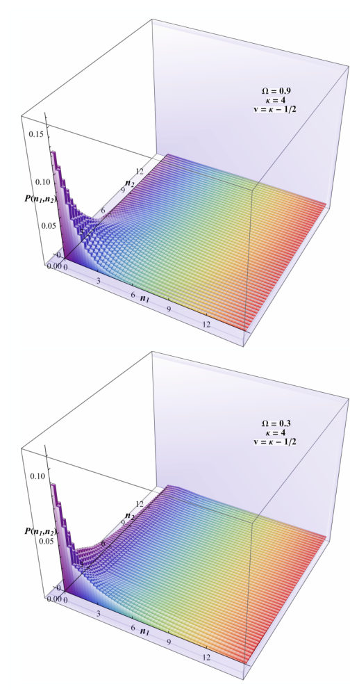
<figcaption class="paper-figure-caption"><b>Fig 4.</b> FIG. 3. Joint photon number distribution P(n1, n2) of a TGS state at maximum correlations v = κ −1</figcaption>
</figure>
<figure class="paper-figure-card">

<figcaption class="paper-figure-caption"><b>Fig 5.</b> FIG. 5. Entangled regions of the (κ, v) plane of the 14|23 bipartition for a) F = 3 and b) F = 6. The dashed diagonal line is the physicality bound v = κ−1</figcaption>
</figure>
</div>

<p><strong>Summary.</strong> This paper rigorously analyzes the Twisted Gaussian Schell state, a quantum analogue of structured light beams. It demonstrates that the 'twist' parameter acts as a resource, inducing measurable nonclassical correlations and activating entanglement in multipartite systems even when the state is otherwise separable. The findings establish a deep connection between classical beam properties and fundamental quantum information measures.</p>
<p><strong>Why it may be interesting.</strong> This work bridges classical beam engineering concepts (Schell model) with quantum information theory in the context of continuous-variable quantum optics, providing concrete signatures for nonclassicality and entanglement induced by geometric phase terms like the twist.</p>
<details>
<summary>Detailed structure</summary>
<p><strong>Main problem.</strong> The paper introduces and analyzes the Twisted Gaussian Schell (TGS) state, a quantum-optical analog of a classical beam model, to characterize its nonclassicality and entanglement properties.</p>
<p><strong>Main result.</strong> The TGS state exhibits nonclassicality when the twist parameter is non-zero, and increasing this twist parameter can activate or deepen entanglement in select bipartitions even if the natural bipartition remains separable.</p>
<p><strong>Method.</strong> The analysis uses quantum optics formalism, calculating observables like quadrature variances, logarithmic negativity (entanglement), and joint photon number distributions in both Fock and covariance matrix representations.</p>
<p><strong>Model / system.</strong> The system is the two-mode TGS state ($\hat{
ho}_{	ext{TGS}}$), a mixed Gaussian state generated via metaplectic evolution from an initial thermal state. It is characterized by parameters including local squeezing ($\Omega$), thermal noise ($\kappa$), and the twist phase ($v$).</p>
<p><strong>Key observables.</strong> Nonclassicality (squeezing below shot-noise limit), Entanglement (Logarithmic Negativity, $    ext{EN}$), Mutual Information ($I$, $I_G$), and Joint Photon Number Distribution $P(n_1, n_2)$.</p>
<p><strong>Important parameters / regimes.</strong> Twist parameter ($v$), local squeezing ($\Omega$), thermal noise ($\kappa$); the analysis explores regimes where these parameters dictate separability or entanglement.</p>
<p><strong>Assumptions / limitations.</strong> The analysis relies on the formal equivalence between paraxial classical optics and continuous-variable quantum systems, and uses criteria like PPT for Gaussian state separability.</p>
<p><strong>Figures summary.</strong> Figures illustrate the generation scheme (Fig. 1), density plots of mutual information (Fig. 2), joint photon distributions $P(n_1, n_2)$ (Fig. 3), and maps showing entanglement regions in the $(\kappa, v)$ plane (Fig. 5).</p>
<p><strong>Paper structure.</strong> The paper systematically analyzes the TGS state by first establishing its generation scheme, then characterizing nonclassicality via quadrature squeezing, followed by detailed investigations into separability and entanglement across various bipartitions using both photon number statistics and covariance matrix methods.</p>
</details>
<details>
<summary>Abstract</summary>
<p>We introduce the Twisted Gaussian Schell (TGS) state, a two-mode mixed Gaussian state defined as the quantum-optical analog of the Twisted Gaussian Schell-model beam of classical paraxial optics, characterized by the so-called twist phase. In the TGS state, the twist parameter arises when an asymmetric two-mode thermal state is subject to local squeezing after the action of phase shifters and a beam splitter. Its defining quantum feature is nonclassicality: although the state is separable in its natural bipartition, when the twist parameter is nonzero there are global quadratures that can be squeezed below the shot-noise limit. The nonclassicality has also a direct signature in the joint photon-number distribution, which we obtain in closed form. Moreover, coupling each mode to an ancillary vacuum at a balanced beam splitter yields a four-mode state with entanglement in select $2\times2$ bipartitions, with local description given by two TGS states, and all $1\times3$ bipartitions.   For fixed input squeezing, increasing the twist parameter activates entanglement where the state is otherwise separable and deepens it where already present. The classical physicality bound on the twist parameter coincides with the quantum physicality condition. These results advance the two-way bridge between classical beam engineering and quantum information.</p>
</details>
<p><sub><a href="#top">↑ back to top</a></sub></p>

<p><a id="paper-2607.01062"></a></p>
<h3 id="chiral-enhancement-of-two-magnon-bound-states-in-an-math546math-triangular-lattice-magnet"><a href="http://arxiv.org/abs/2607.01062v1">Chiral enhancement of two-magnon bound states in an $S=1/2$ triangular-lattice magnet</a></h3>
<p><strong>Authors:</strong> László Rudner, Karlo Penc<br>
<strong>Type:</strong> theory · <strong>Category:</strong> strongly correlated electrons · <strong>PDF:</strong> <a href="https://arxiv.org/pdf/2607.01062v1">https://arxiv.org/pdf/2607.01062v1</a><br>
<strong>Analysis basis:</strong> full PDF text, analyzed in chunks
<strong>Topic relevance:</strong> <code>analog quantum simulation</code> <strong>3/5</strong> · <code>exotic spin models in light-matter</code> <strong>3/5</strong> · <code>Keldysh / 2PI / non-Gaussian methods</code> <strong>1/5</strong> · <code>entanglement &amp; information structure</code> <strong>1/5</strong> · <code>spintronics-quantum-optics interface</code> <strong>1/5</strong></p>
<div class="figure-strip-hint">↔ Scroll figures horizontally</div>
<div class="paper-figures-scroll">
<figure class="paper-figure-card">

<figcaption class="paper-figure-caption"><b>Fig 1.</b> FIG. 1. Triangular lattice showing the J1 first-, J2 second-, and J3 third-neighbor Heisenberg exchanges, as well as the scalar-chirality terms ˆχijk on the up- and down-pointing tri- angles. The circular arrows define the orientation of the or- dered sites i, j, and k around each triangle. The primitive lattice vectors are a1 = (1, 0) and a2 = (1/2, √</figcaption>
</figure>
<figure class="paper-figure-card">
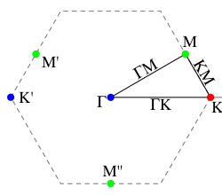
<figcaption class="paper-figure-caption"><b>Fig 2.</b> FIG. 2. Brillouin zone of the triangular lattice with the in- equivalent Γ, K, and M points and high-symmetry lines. We also illustrate the q = (q, 0) line in Eq. (23) that connect Γ, K, and M ′′ point in straight line.</figcaption>
</figure>
<figure class="paper-figure-card">

<figcaption class="paper-figure-caption"><b>Fig 3.</b> FIG. 3. Luttinger–Tisza phase diagram of the triangular- lattice J1-J2-J3 Heisenberg model. Panels (a) and (b) show the antiferromagnetic nearest-neighbor case, J1 = +1, with panel (a) giving an enlarged view of the central region of panel (b). Panel (c) shows the ferromagnetic nearest-neighbor case, J1 = −1. Colors indicate the ordering wave vector q at which Jq is minimized. They distinguish the commensu- rate Γ, K, and M regions from incommensurate spiral regions whose minima lie on the high-symmetry lines ΓK, ΓM, and KM. Equivalently, these wave vectors are the momenta at which the single-magnon dispersion softens. The thick red line marks the J2 = 2J3 locus associated with the MA1 min-...</figcaption>
</figure>
<figure class="paper-figure-card">
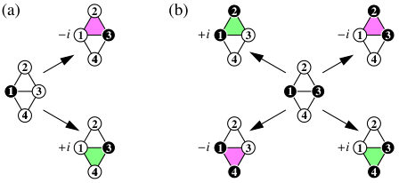
<figcaption class="paper-figure-caption"><b>Fig 4.</b> FIG. 4. Action of the uniform scalar spin chirality interac- tion 4(ˆχ123 + ˆχ134) = i ˆP123 −i ˆP132 +i ˆP134 −i ˆP143 for spin-1/2 one- and two-magnon states; see Eq. (7). Empty circles de- note up spins and filled circles down spins. Colored triangles indicate the permutation terms that act nontrivially on the displayed spin configuration; the color encodes the sign of the imaginary amplitude, with magenta denoting −i and green +i. (a) In the one-magnon sector, the down spin on site 1 can hop to site 3 through two oriented triangles, correspond- ing to the processes −i ˆP132 and +i ˆP134. These two ampli- tudes cancel, so the scalar-chirality term does not contribute to the one-magnon...</figcaption>
</figure>
<figure class="paper-figure-card">
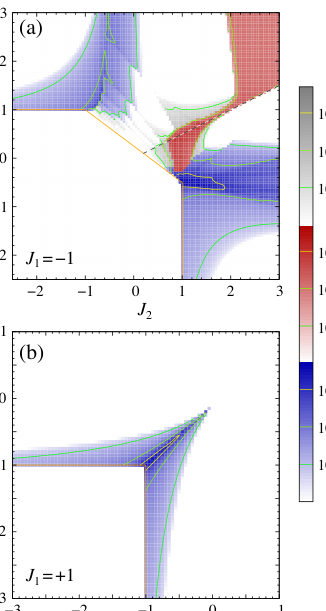
<figcaption class="paper-figure-caption"><b>Fig 5.</b> FIG. 6. Scan of the momentum and the gap of the lowest energy bound state in the J2-J3 parameter space for (a) fer- romagnetic and (b) antiferromagnetic J1 exchanges. We use Eq. (70) to calculate the gap ∆with energies from an exact di- agonalization calculation of a 3×242 = 1728-site cluster. The lowest energy bound state is mostly at the K = Γ point, while there are some regions where it is at the M point, and at in- commensurate values where the minima of the single magnon dispersion are also incommensurate, in the ΓK or ΓM phase. The largest value of the gap is at (J1, J2, J3) = (−1, 1, −1/2) and (1, −1, −1). The thin orange lines denote the boundary of the ferromagnetic phase, and the...</figcaption>
</figure>
</div>

<p><strong>Summary.</strong> This theoretical work examines how scalar chirality modifies two-magnon excitations in a triangular lattice magnet. The key finding is that chirality acts as an effective interaction, selectively strengthening the binding of one specific two-magnon state. This mechanism provides a microscopic route to inducing spin-nematic instabilities without affecting the fundamental single-particle magnetic gap.</p>
<p><strong>Why it may be interesting.</strong> While focused on magnetism, the methodology—using symmetry analysis and solving coupled excitation equations (gap equations)—is highly relevant for understanding collective excitations in strongly correlated quantum systems beyond simple mean-field treatments.</p>
<details>
<summary>Detailed structure</summary>
<p><strong>Main problem.</strong> The study investigates how a uniform scalar-chirality interaction affects two-magnon bound states in a spin-1/2 triangular-lattice magnet.</p>
<p><strong>Main result.</strong> The chirality term selectively enhances the binding of one specific two-magnon channel by splitting opposite relative-motion chiralities, without altering the single-magnon spectrum.</p>
<p><strong>Method.</strong> The analysis uses symmetry-adapted partial-wave decomposition to derive finite-dimensional gap equations for the two-magnon sector, confirmed by exact diagonalization.</p>
<p><strong>Model / system.</strong> The system is a spin-1/2 triangular-lattice Heisenberg model with $J_1, J_2, J_3$ exchange interactions, augmented by a scalar-chirality term ($\hat{H}_{	ext{Chir}}$). The analysis focuses on excitations above the fully polarized state.</p>
<p><strong>Key observables.</strong> Two-magnon binding energy ($\Delta$), one-magnon dispersion relation, and the resulting spin-nematic instability signatures.</p>
<p><strong>Important parameters / regimes.</strong> Exchange couplings ($J_1, J_2, J_3$) and the chirality coupling strength ($J_\chi$).</p>
<p><strong>Assumptions / limitations.</strong> The analysis is performed in the high-field limit above the fully polarized state; it focuses on leading pair channels (two-magnon states).</p>
<p><strong>Figures summary.</strong> Figures illustrate parameter space loci for various magnetic ordering manifolds and show gap contours derived from the $K=0$ gap equation, demonstrating enhanced binding at specific coupling values.</p>
<p><strong>Paper structure.</strong> The paper first analyzes the one-magnon sector to show chirality cancels out there. It then tackles the two-magnon sector by deriving a partial-wave decomposition of the interaction kernel, leading to solvable gap equations that reveal chiral enhancement.</p>
</details>
<details>
<summary>Abstract</summary>
<p>We study one- and two-magnon excitations above the fully polarized state of the spin-$1/2$ triangular-lattice $J_1$-$J_2$-$J_3$ Heisenberg model with an additional uniform scalar-chirality interaction. In the one-magnon sector of the Heisenberg model, we identify two special minimum manifolds by rewriting the dispersion in complete-square form. The scalar-chirality term cancels exactly in this sector, leaving the one-magnon dispersion and the single-magnon instability unchanged. In contrast, it survives in the two-magnon sector as an oriented interaction between neighboring flipped spins. Using symmetry-adapted triangular-lattice harmonics, we derive finite-dimensional gap equations at the $Γ$ point in the symmetry-resolved $\mathsf{A_1}$ and $\mathsf{E_2}$-type partial-wave channels. The chirality coupling splits the two opposite relative-motion chiralities in the $\mathsf{E_2}$-type sector, thereby selectively enhancing one two-magnon bound-state channel. Exact diagonalization confirms this mechanism and reveals enhanced binding, as well as additional bound states at $M$ and at incommensurate total momenta. Our results identify scalar chirality as an efficient microscopic mechanism for strengthening two-magnon binding without shifting the one-magnon spectrum, and provide a route toward high-field spin-nematic and multipolar instabilities.</p>
</details>
<p><sub><a href="#top">↑ back to top</a></sub></p>

<p><a id="paper-2607.00082"></a></p>
<h3 id="toward-hamiltonian-simulations-of-maxwell-chern-simons-theory-constant-modes-and-gauge-field-truncation"><a href="http://arxiv.org/abs/2607.00082v1">Toward Hamiltonian simulations of Maxwell-Chern-Simons theory: constant modes and gauge field truncation</a></h3>
<p><strong>Authors:</strong> Andrea Bulgarelli, Maria Cristina Diamantini, Nico Dichter, Lena Funcke, Tobias Hartung, Karl Jansen, Enrique Rico Ortega, Simran Singh, Lorenzo Spera<br>
<strong>Type:</strong> theory · <strong>Category:</strong> strongly correlated electrons · <strong>PDF:</strong> <a href="https://arxiv.org/pdf/2607.00082v1">https://arxiv.org/pdf/2607.00082v1</a><br>
<strong>Analysis basis:</strong> full PDF text, analyzed in chunks
<strong>Topic relevance:</strong> <code>analog quantum simulation</code> <strong>3/5</strong> · <code>exotic spin models in light-matter</code> <strong>3/5</strong> · <code>correlated cavity matter</code> <strong>1/5</strong> · <code>entanglement &amp; information structure</code> <strong>1/5</strong> · <code>non-equilibrium dynamics</code> <strong>1/5</strong></p>
<div class="figure-strip-hint">↔ Scroll figures horizontally</div>
<div class="paper-figures-scroll">
<figure class="paper-figure-card">

<figcaption class="paper-figure-caption"><b>Fig 1.</b> Figure 1: Difference between the absolute values of the ground state energy and the highest excited-state energy as a function of system size for (a) k = 3 and (b) k = 8. Within numerical precision, the spectrum is symmetric for even N.</figcaption>
</figure>
<figure class="paper-figure-card">

<figcaption class="paper-figure-caption"><b>Fig 2.</b> Figure 2: The degeneracy of the energy levels is approached exponentially fast as N is increased. In commensurate cases, the degeneracy becomes exact.</figcaption>
</figure>
<figure class="paper-figure-card">

<figcaption class="paper-figure-caption"><b>Fig 3.</b> Figure 3: Convergence of the level spacing to a harmonic oscillator for different values of the CS level k. ∆Ei represents the energy gap between the (i −1)-th and the i-th quasi-degenerate multiplets.</figcaption>
</figure>
<figure class="paper-figure-card">

<figcaption class="paper-figure-caption"><b>Fig 4.</b> Figure 4: Mid spectrum for (a) k = 3, N = 4 and (b) k = 5, N = 6.</figcaption>
</figure>
<figure class="paper-figure-card">
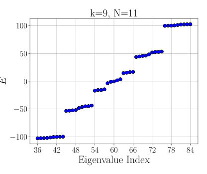
<figcaption class="paper-figure-caption"><b>Fig 5.</b> Figure 5: Mid spectrum for (a) k = 3, N = 7 and (b) k = 9, N = 11.</figcaption>
</figure>
</div>

<p><strong>Summary.</strong> This paper tackles the difficult task of non-perturbatively simulating Maxwell-Chern-Simons theory by analyzing its constant mode sector on a torus lattice. By mapping the problem onto a Hofstadter model, the authors demonstrate that the finite lattice spectrum correctly reproduces the system's fundamental topological degeneracy in the continuum limit. This provides a powerful theoretical tool for understanding how global topological invariants manifest in discretized quantum Hamiltonians.</p>
<p><strong>Why it may be interesting.</strong> The study of topological gauge theories like MCS theory provides an excellent model for understanding emergent quantum symmetries and ground state degeneracies in strongly interacting lattice systems, relevant to fractional quantum Hall physics.</p>
<details>
<summary>Detailed structure</summary>
<p><strong>Main problem.</strong> The primary goal is developing a non-perturbative Hamiltonian approach for Maxwell-Chern-Simons (MCS) theory in 2+1 dimensions, which is challenging due to the sign problem.</p>
<p><strong>Main result.</strong> The study shows that the lattice spectrum exhibits quasi-degeneracies whose vanishing spread in the continuum limit correctly recovers the global topological degeneracy predicted by the CS level $k$.</p>
<p><strong>Method.</strong> The authors analyze the zero-mode sector on a spatial torus, discretizing it to map the problem onto a generalized Harper-Hofstadter model with twisted boundary conditions.</p>
<p><strong>Model / system.</strong> The system is the MCS theory defined on a lattice torus. The Hamiltonian is analyzed by focusing on the flat (zero-mode) sector, which governs the topological properties of the gauge field.</p>
<p><strong>Key observables.</strong> Topological degeneracy ($k$-fold), energy spectrum structure, and the convergence rate of quasi-degenerate energy clusters.</p>
<p><strong>Important parameters / regimes.</strong> The CS level $k$ (determining flux $\Phi_{tot} = 2\pi k$), lattice size ($N_x, N_y$), and the ratio of flux to area ($\alpha$).</p>
<p><strong>Assumptions / limitations.</strong> The analysis focuses on the constant mode sector (flat connections) as a solvable benchmark. The continuum limit requires the flux per plaquette $\alpha$ to be small.</p>
<p><strong>Figures summary.</strong> Figures illustrate the convergence of energy level spacing towards harmonic oscillator behavior and show the emergence of $k$-fold quasi-degenerate multiplets in finite lattices, particularly when commensurability conditions are met.</p>
<p><strong>Paper structure.</strong> The paper progresses from establishing the physical motivation (Hamiltonian approach to MCS theory) to analyzing the zero-mode sector on a torus. It details the lattice discretization, derives the effective Harper-type Hamiltonian, and systematically analyzes spectral properties under different flux/lattice commensurability regimes ($   ext{gcd}(k, N)$).</p>
</details>
<details>
<summary>Abstract</summary>
<p>Maxwell-Chern-Simons (MCS) theory in $2+1$ dimensions provides a paradigmatic example of a topological gauge theory with both dynamical and topological degrees of freedom. Its Euclidean formulation suffers from a sign problem, making Hamiltonian numerical approaches particularly attractive. As a first step toward the non-perturbative Hamiltonian study of MCS theory, we investigate the constant mode sector on a spatial torus. Being analytically solvable in the continuum, it provides an ideal benchmark for understanding how the topological properties of the theory are encoded in a finite-dimensional lattice Hilbert space. We construct a finite-dimensional discretization of the torus of flat connections and show that the resulting lattice problem maps onto a generalized Harper-Hofstadter model with twisted boundary conditions. We identify the commensurability conditions under which the finite lattice exactly reproduces the magnetic translation algebra and the topological degeneracy of the continuum theory. A systematic analysis of gauge field truncation and its convergence toward the continuum limit is then presented.</p>
</details>
<p><sub><a href="#top">↑ back to top</a></sub></p>

<p><a id="paper-2607.01081"></a></p>
<h3 id="exact-dimer-ground-states-of-long-range-spin-chains-and-ladders"><a href="http://arxiv.org/abs/2607.01081v1">Exact dimer ground states of long-range spin chains and ladders</a></h3>
<p><strong>Authors:</strong> Jędrzej Wardyn, Miłosz Panfil<br>
<strong>Type:</strong> theory · <strong>Category:</strong> strongly correlated electrons · <strong>PDF:</strong> <a href="https://arxiv.org/pdf/2607.01081v1">https://arxiv.org/pdf/2607.01081v1</a><br>
<strong>Analysis basis:</strong> full PDF text, analyzed in chunks
<strong>Topic relevance:</strong> <code>exotic spin models in light-matter</code> <strong>3/5</strong> · <code>analog quantum simulation</code> <strong>2/5</strong> · <code>entanglement &amp; information structure</code> <strong>2/5</strong> · <code>correlated cavity matter</code> <strong>1/5</strong></p>
<div class="figure-strip-hint">↔ Scroll figures horizontally</div>
<div class="paper-figures-scroll">
<figure class="paper-figure-card">

<figcaption class="paper-figure-caption"><b>Fig 1.</b> Figure 1: Diagram of a J1 −K1 −J2 −K2 −J3 −K3 chain given in (2). The Jn(Kn) interactions are drawn in red (blue) and the decreasing thickness signifies increase in distance n.</figcaption>
</figure>
<figure class="paper-figure-card">

<figcaption class="paper-figure-caption"><b>Fig 2.</b> Figure 3: (a) The positivity polytope for J1–J2–J3 model: the teal region is for the spin chain (δn = 0) and the orange region for ladder with δk specified on the plot. The values are in the units of J1. The two black dots are the models with the exact dimer ground states. For the chain this is the Majumdar-Ghosh model. (b) The dimerization polytope for J1 −J5 model for chain (teal) and for ladder (yellow). The values of ¯J2 and ¯J4 are fixed by the condition (33).</figcaption>
</figure>
<figure class="paper-figure-card">

<figcaption class="paper-figure-caption"><b>Fig 3.</b> Figure 5: The ground state energy density of anisotropic LEM Hamiltonians in γy-γz plane normalised by γx. (a) For n = 4 and above the critical line, the anisotropic LEM is semi-positive definite, the ground state has zero energy, and is the dimer state. Below, the critical line the anisotropic LEM is not positive and the ground state is not anymore the exact dimer. (b) For n = 3 there is an approximate at small anisotropies dimer state we show nonexact dimer phase transition that happens below the red line, where we can see the highest scaled values of energy happen around the phase transition line. At γy/γz = 1 the model admits XXZ anisotropy, transitioning to an exact fully polarised...</figcaption>
</figure>
<figure class="paper-figure-card">

<figcaption class="paper-figure-caption"><b>Fig 4.</b> Figure 4: The critical lines for the positivity of the anisotropic Qγ operators for even (left panel) and odd (right panel ) ranges n of the couplings. The horizontal lines are the XXZ values of eq. (43). For n = 2 we have an analytical result shown as dashed green lines [40] which we compare to n &gt; 3 results from ED in (a) and (b).</figcaption>
</figure>
<figure class="paper-figure-card">

<figcaption class="paper-figure-caption"><b>Fig 5.</b> Figure 7: Phase diagram of J1 −J2 −J3 −J4 anisotropic chain shown by measurements of the ground state energy and dimer entropy done with ED for system of size L = 16 in OBC. The dimerization conditions predict the dimer phase in the hatched region bounded by dashed red lines. As in the isotropic case we see the conditions are not necessary as we find dimer phase in the whole white region. The blue line denotes phase transition to an exact FM phase.</figcaption>
</figure>
</div>

<p><strong>Summary.</strong> This work rigorously determines the conditions under which long-range quantum spin chains and ladders possess an exact dimer ground state. By analyzing Hamiltonian structure using semi-positivity criteria and extending these methods to anisotropic interactions, the authors map out complex phase diagrams. The findings provide both theoretical boundaries and numerical confirmations for understanding highly correlated magnetic phases.</p>
<p><strong>Why it may be interesting.</strong> The rigorous mathematical framework used—defining physical phases through convex cones and spectral positivity—provides powerful tools applicable to understanding stability in complex, interacting many-body systems beyond simple mean-field treatments.</p>
<details>
<summary>Detailed structure</summary>
<p><strong>Main problem.</strong> The primary goal is determining precise, explicit conditions on coupling constants that guarantee an exact dimer state is the ground state for long-range interacting spin chains and ladders.</p>
<p><strong>Main result.</strong> The authors derived sufficient conditions ($\alpha_n \ge 0$, $eta_{2n} \ge 0$, and $eta_{2n-1} = 0$) that define regions in the phase diagram where the dimer state is guaranteed, extending these results to anisotropic interactions.</p>
<p><strong>Method.</strong> The analysis combines theoretical derivation of necessary/sufficient conditions (e.g., semi-positivity arguments) with validation using exact diagonalization on finite systems and geometric interpretations via convex cones.</p>
<p><strong>Model / system.</strong> The study focuses on interacting quantum spin chains and ladders described by long-range Hamiltonians, which are generalized to include anisotropic interactions ($\gamma_\mu$). The system is analyzed in terms of pseudospin operators and related linear exchange models.</p>
<p><strong>Key observables.</strong> Ground state energy ($E_{	ext{GS}}$), Dimer entanglement entropy ($\Delta S_{	ext{dimer}}$), and the coefficients $\alpha_n$ and $eta_n$ derived from the Hamiltonian structure.</p>
<p><strong>Important parameters / regimes.</strong> Coupling constants $\{J_n\}$ and $\{K_n\}$, anisotropy parameters ($\gamma_x, \gamma_y, \gamma_z$), and system length $L$.</p>
<p><strong>Assumptions / limitations.</strong> The analysis assumes an even length $L$ for simplicity; while sufficient conditions are derived, numerical results suggest the actual dimer phase can extend beyond these theoretical boundaries.</p>
<p><strong>Figures summary.</strong> Figures illustrate phase diagrams showing predicted vs. numerically found regions for the dimer state in both isotropic and anisotropic chains/ladders, using energy and entanglement entropy as diagnostics.</p>
<p><strong>Paper structure.</strong> The paper progresses from establishing general Hamiltonian forms (chains/ladders) to deriving necessary conditions via semi-positivity arguments ($\alpha_n, eta_n$). It then extends this analysis to include anisotropy by analyzing the spectrum of an asymmetric quantum top and finally validates results using ED on specific models.</p>
</details>
<details>
<summary>Abstract</summary>
<p>Interacting spin chains and ladders are known to support a plethora of quantum phases with complex ground-state phase diagrams. In this work, we study a large family of such models and determine precise, explicit conditions under which an exact dimer state is guaranteed to be the ground state. These general conditions are validated for various generalizations of the Majumdar-Ghosh model using exact diagonalization. Our results provide exact reference points in the phase diagrams of a wide class of spin chains and ladders, including those with anisotropic and arbitrary-range interactions.</p>
</details>
<p><sub><a href="#top">↑ back to top</a></sub></p>
<hr>
<p>
<a href="index.html">← Index</a>
 · <a href="papers_02.html">← Previous</a> · <a href="papers_04.html">Next →</a>
</p>
<hr>

</body>
</html>
